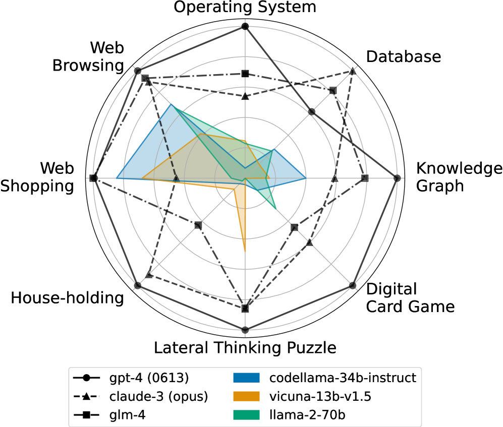
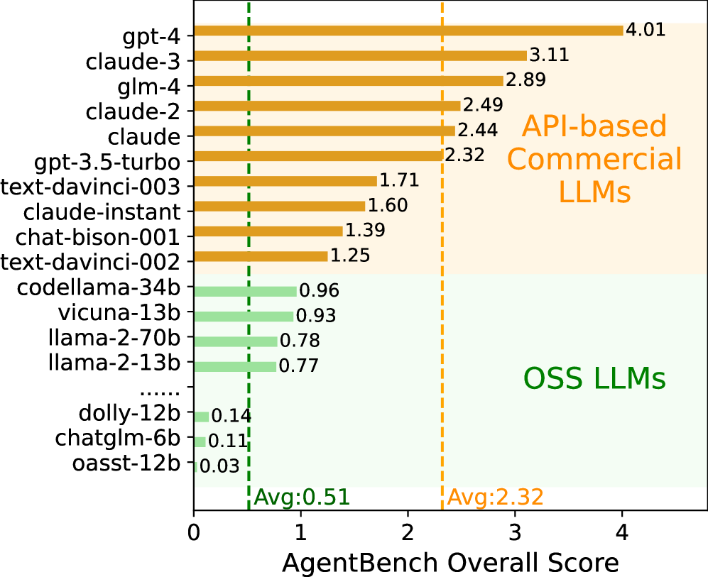
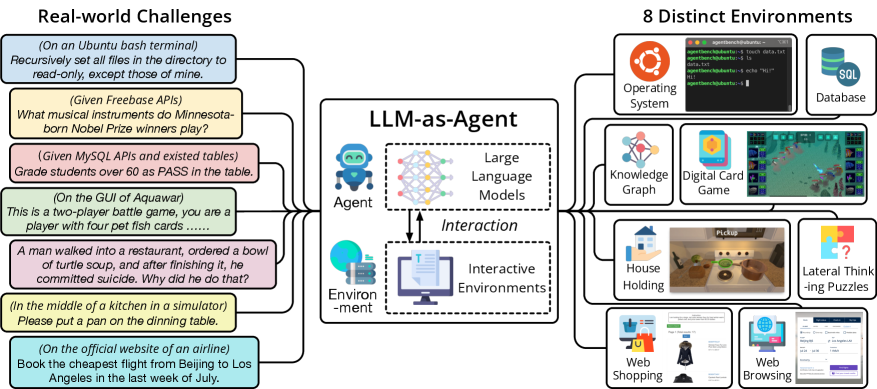
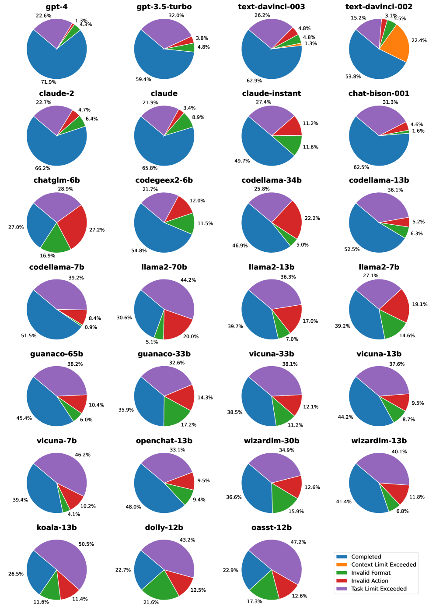

\ul
AgentBench: Evaluating LLMs as Agents
Abstract
The potential of Large Language Model (LLM) as agents has been widely acknowledged recently. Thus, there is an urgent need to quantitatively evaluate LLMs as agents on challenging tasks in interactive environments. We present AgentBench, a multi-dimensional benchmark that consists of 8 distinct environments to assess LLM-as-Agent’s reasoning and decision-making abilities. Our extensive test over 29 API-based and open-sourced (OSS) LLMs shows that, while top commercial LLMs present a strong ability of acting as agents in complex environments, there is a significant disparity in performance between them and many OSS competitors that are no larger than 70B. We identify the typical reasons of failures in environments and LLMs, showing that poor long-term reasoning, decision-making, and instruction following abilities are the main obstacles for developing usable LLM agents. Improving instruction following and training on high quality multi-round alignment data could improve agent performance. And different from existing assumptions, training on code present ambivalent impacts on different agent tasks. Datasets, environments, and an integrated evaluation package for AgentBench are released at https://github.com/THUDM/AgentBench.


1 Introduction
Intelligent agents and autonomous entities (Searle, 1970; Maes, 1994; Wooldridge & Jennings, 1995) that are capable of decision-making and action execution in particular environments have been key concepts of artificial intelligence (AI) historically. Notwithstanding substantial advancements in deep learning algorithms applied in both computer vision and natural language processing (NLP), their potential for developing efficient and practically usable assisting agents remains largely unexplored.
The advent of Large Language Models (LLMs) (Brown et al., 2020; Chowdhery et al., 2022; Touvron et al., 2023), such as GPT-4 (OpenAI, 2023), has brought plenty of new opportunities to this realm. Through extensive alignment training (Ouyang et al., 2022; Wei et al., 2022a; Sanh et al., 2022), LLMs have not only mastered traditional NLP tasks but also showcased an impressive ability to comprehend human intent and execute instructions. This has spurred the development of various LLM-based applications for autonomous goal completion (like AutoGPT (Richards, 2023), BabyAGI (Nakajima, 2023), AgentGPT (age, 2023)) as well as LLM agents situated in social and game contexts (Park et al., 2023; Wang et al., 2023b; Zhu et al., 2023), sparking substantial public interest and discussions.
Despite these advancements, the lack of a systematic and standard benchmark to evaluate LLM-as-Agent presents a critical challenge. Historically, text-based game environments (Osborne et al., 2022; Côté et al., 2019; Hausknecht et al., 2020; Urbanek et al., 2019) have been employed for language agent evaluation. But they often suffer from the limitation of closed, discrete action spaces, as well as their primarily narrow focus on models’ commonsense grounding. More recently, attempts on embodied agents (Reed et al., 2022; Huang et al., 2022; Ahn et al., 2022; Li et al., 2022a) have employed complicated multi-modal simulators based on games (Küttler et al., 2020; Fan et al., 2022), GUI (Shi et al., 2017; Toyama et al., 2021), and indoor scenes (Shen et al., 2021; Srivastava et al., 2022). However, these simulators, despite their complexity, do not accurately reflect the practical use cases of LLMs, and their multi-modal nature creates a hurdle for the urgent evaluation of existing text-only LLMs. Finally, most benchmarks now for agents focus on single environments and thus fail to provide a comprehensive overview of LLMs across diverse application scenarios.

To address these challenges, we introduce AgentBench, a multi-dimensional benchmark designed to evaluate LLM-as-Agent across a spectrum of different environments. AgentBench encompasses eight distinct environments (Cf. Figure 4, five out of eight are created for the first time), which could be categorized into three types of groundings:
All datasets, whether newly created or adapted from existing ones, are meticulously designed and reformulated to simulate interactive environments where text-only LLMs can operate as autonomous agents. AgentBench thus systematically evaluate an LLM’s core abilities, including following instructions (Ouyang et al., 2022), coding (Chen et al., 2021), knowledge acquisition (Joshi et al., 2017; Talmor et al., 2019), logical reasoning (Srivastava et al., 2023), and commonsense grounding (Shridhar et al., 2020a). It serves as an ideal testbed for both LLM and agent evaluation.
In addition, we develop a unified evaluation toolkit for LLMs to operate on diverse customized agent tasks, thus enabling a comprehensive benchmarking of the LLM-as-Agent ability of 29 different LLMs on AgentBench, including both API-based and OSS models. Our results reveal that top-tier models like GPT-4 are capable of handling a wide array of real-world tasks, indicating the potential for developing a potent, continuously learning agent. However, we also note a significant performance gap between these top-tier models and their OSS competitors. Despite the recent success of OSS LLMs and their competitive scores on several benchmarks (Li et al., 2023; Chen et al., 2021; Cobbe et al., 2021), their performance on the challenging AgentBench tasks lags considerably. This underscores the necessity for additional efforts to enhance the learning abilities of OSS LLMs.
We identify portions of agent task failures in different environments and LLMs, unveiling the insufficient abilities of long-term reasoning, decision-making, and instruction following in existing LLMs. Comparisons between different LLMs manifest that a proper strategy of introducing code training can help improve LLM-as-Agent. Alignment training over high-quality data (e.g., data generated by gpt-4) could also help improve LLM agents. In summary, our contributions are:
-
•
We introduce the concept of evaluating LLMs as agents and present AgentBench, a comprehensive benchmark to standardize the evaluation. It defines eight distinct environments of 3 types based on real-world scenarios, offering a practical testbed for LLMs’ wide array of capabilities.
-
•
We perform a thorough evaluation of 29 different LLMs using AgentBench, uncovering a significant performance gap between leading API-based commercial LLMs and many OSS models that are no larger than 70B. We also quantitatively analyze the reasons for failures in existing LLM agents and highlight directions for improvement, such as improving instruction following, higher-quality alignment data. Also, we show that code training could be a double-edged sword, which improves some agent tasks while harms other.
-
•
To facilitate the evaluation of LLM-as-Agent, we have introduced an integrated toolkit grounded in the Server-Client architecture, focusing on modular and scalable design principles. This enables easy customization of model assessments for any LLMs using the HTTP protocol. Complemented by its associated datasets and environments, this toolkit is now openly accessible to the broader research community.
| Model | #Size | Form | Ver. | Creator | Model | #Size | Form | Ver. | Creator |
| gpt-4 (OpenAI, 2023) | N/A | api | 0613 | dolly-12b (Conover et al., 2023) | 12B | open | v2 | Databricks | |
| gpt-3.5-turbo (OpenAI, 2022) | N/A | api | 0613 | llama2-70b (Touvron et al., 2023) | 70B | open | chat | ||
| text-davinci-003 (Ouyang et al., 2022) | N/A | api | - | llama2-13b (Touvron et al., 2023) | 13B | open | chat | ||
| text-davinci-002 (Ouyang et al., 2022) | N/A | api | - | OpenAI | llama2-7b (Touvron et al., 2023) | 7B | open | chat | Meta |
| claude-3* (Anthropic, 2024) | N/A | api | opus | guanaco-65b (Dettmers et al., 2023) | 65B | open | - | ||
| claude-2 (Anthropic, 2023b) | N/A | api | - | guanaco-33b (Dettmers et al., 2023) | 33B | open | - | Meta | |
| claude (Anthropic, 2023a) | N/A | api | v1.3 | vicuna-33b (Chiang et al., 2023) | 33B | open | v1.3 | ||
| claude-instant (Anthropic, 2023a) | N/A | api | v1.1 | Anthropic | vicuna-13b (Chiang et al., 2023) | 13B | open | v1.5 | |
| chat-bison-001 (Anil et al., 2023) | N/A | api | - | vicuna-7b (Chiang et al., 2023) | 7B | open | v1.5 | LMSYS | |
| glm-4* (Zeng et al., 2022; Du et al., 2022) | N/A | api | - | openchat-13b (Wang et al., 2023a) | 13B | open | v3.2 | Tsinghua | |
| chatglm-6b (Zeng et al., 2022; Du et al., 2022) | 6B | open | v1.1 | wizardlm-30b (Xu et al., 2023) | 30B | open | v1.0 | ||
| codegeex2-6b (Zheng et al., 2023) | 6B | open | - | Tsinghua & Zhipu | wizardlm-13b (Xu et al., 2023) | 13B | open | v1.0 | Microsoft |
| codellama-34b (Rozière et al., 2023) | 34B | open | instruct | koala-13b (Geng et al., 2023) | 13B | open | - | UCB | |
| codellama-13b (Rozière et al., 2023) | 13B | open | instruct | oasst-12b (LAION, 2023) | 12B | open | sft-4 | LAION | |
| codellama-7b (Rozière et al., 2023) | 7B | open | instruct | Meta |
2 LLM-as-Agent: Definition and Preliminary
Here, we formalize the terms for describing the evaluation of LLMs as agents and the necessary preliminary knowledge for using LLMs in the context of agent evaluation.
Definition: Interactive Evaluation of LLM-as-Agent. The interactive evaluation of LLM-as-Agent could be regarded as a Partially Observable Markov Decision Process (), which comprises state space , action space , transition function , reward assigning function , task instruction space , and observation space . Here, we denote an LLM agent as .
Chain-of-Thought (CoT) and Other Reasoning Strategies. Since LLM-as-Agent requires LLMs’ strong reasoning ability, CoT (Wei et al., 2022b), which has been considered a de facto strategy in related evaluation together with actions (Yao et al., 2023b), is also adopted in AgentBench. Despite many improved strategies proposed later, such as introducing ensemble (Wang et al., 2023c), reflection (Shinn et al., 2023), and search (Yao et al., 2023a), we evaluate LLMs with the most primitive CoT in AgentBench. Without multiple trials, repeated generations, or complicated strategies, CoT is the easiest, cheapest, and most common way for people to deploy LLM agents.
Typical Types of Finish Reasons. Despite LLMs’ capabilities, we show in AgentBench that even the strongest gpt-4 is not qualified as a practically usable agent. We identify and categorize finish reasons of LLM agents on AgentBench tasks into five typical types:
-
•
Context Limit Exceeded (CLE): the length of interaction history exceeds the LLM’s maximum context length (only happened in 2,048-length LLMs text-davinci-002 and 003).
-
•
Invalid Format (IF): the agent does not follow the format instruction.
-
•
Invalid Action (IA): the agent follows the format instruction, but its selected action is invalid.
-
•
Task Limit Exceeded (TLE): the agent does not solve the problem after reaching the predefined maximum interaction rounds or begins to do repeated generations for many rounds.
and Complete (task ends normally). While IF and IA are mostly caused by LLMs’ poor instruction following, TLE often indicates a weak multi-turn ability in certain tasks.
3 Composition of AgentBench: A Brief Look
In this section, we briefly introduce the datasets and environments that compose the AgentBench. Compared to previous agent evaluation benchmarks (Côté et al., 2019; Fan et al., 2022), AgentBench concentrates on the practical evaluation of LLMs via Chain-of-Thought (CoT) (Wei et al., 2022b; Yao et al., 2023b) prompting, including code-grounded, game-grounded, and web-grounded scenarios. They pinpoint promising directions for the application of LLMs with autonomous mission completion, and their versatility avoids task-specific models’ (e.g., code-specific LLMs) overperformance on AgentBench. Due to page limit, for details of construction, evaluation, and prompt examples, please refer to Appendix.
3.1 Code-grounded Environments
Since LLMs can generate high-quality codes (Chen et al., 2021), a very practical mission for LLM agents is to assist human interaction with computer interfaces. Here, we introduce three environments depending on coding and reasoning abilities as representatives in AgentBench.
Operating System (OS). Allowing LLMs to access and manipulate OS in the terminal is a fascinating but challenging mission. Despite attempts to translate natural language to Shell commands (Lin et al., 2018), few prior efforts evaluate models in executable environments. We aim to evaluate LLMs in genuine interactive bash environments (i.e., Ubuntu Docker (Merkel et al., 2014)) on human questions with deterministic answers (e.g., number of users with non-/home directories in an OS.) or series of operations for practical goals (e.g., recursively set all directory files to read-only, excluding mine). We adopt the success rate (SR) as the evaluation metric. (Cf. Appendix B for more details)
Database (DB). As database analysis is crucial but also difficult in many daily affairs, it is paramount to examine LLMs’ abilities to operate on real databases via SQL. Prior research has a significant emphasis on individual procedures, such as translation between SQL and natural language (Zhong et al., 2017; Gao et al., 2023; Pourreza & Rafiei, 2023; Ruan et al., 2023), or answering questions given individual small tables (Nan et al., 2021; Iyyer et al., 2017). However, few consider evaluating models on the complete pipeline as a whole. Therefore, AgentBench evaluates LLMs on authentic SQL interfaces, databases, and different types of queries, as found in real-world scenarios. We adopt the SR as the main evaluation metric. (Cf. Appendix C for more details)
Knowledge Graph (KG (Anonymous, 2023)). Engagement with contemporary KGs, which are often vast in size (e.g., Freebase (Bollacker et al., 2008) has over 45M entities and 3B facts), demands a broad range of skills from an intelligent agent (Gu et al., 2023). Operating in such environments, which are only partially observable, requires the agent to make decisions with incomplete information and manage inherent uncertainties with various skills, including language understanding (e.g., intricacies and subtleties), planning (e.g., breaking down instructions into more manageable components), and tool using (e.g., interact with KG interfaces). As a result, we propose KG as a representative testing ground to assess the decision-making abilities of AI agents. We adopt question answering as the basic task formulation and consequently the answer F1 as the metric. (Cf. Appendix D for more details)
3.2 Game-grounded Environments
Playing games usually requires strong capabilities in designing strategies, following instructions, and reasoning. Unlike code-grounded tasks, those in game-grounded environments do not require coding expertise but rather a more comprehensive understanding of common sense and world knowledge.
Digital Card Game (DCG). Games usually could serve as simulated environments for intelligent agent development. And DCG (e.g., Hearthstone (Hoover et al., 2020)) is an ideal option for text-only LLMs. It usually involves abundant text descriptions for cards, requiring thoughtful playing strategies to win, testing a model’s understanding of game rules, operating logic, and abilities to form strategic decisions based on current situation in the game. In AgentBench, we adopt a simplified DCG system Aquawar111https://www.saiblo.net/ from the 2021 THU Agent Competition (THUAC) for evaluating LLMs as Agent. In Aquawar, the agent acts as a player controlling a team of fishes with different talents to battle against another algorithm-based team in a turn-based form. We report LLMs’ win rate as the evaluation metric. (Cf. Appendix E for more details)
Lateral Thinking Puzzles (LTP). Lateral thinking puzzles (Sloane, 1992; De Bono, 1970), also known as situation puzzles or 海龟汤, are globally popular group games that propelling participants to solve riddles from unconventional perspectives. Typically, one person hosts and others guess the mystery through strategic questioning, with responses limited to "yes", "no", or "irrelevant". In this dataset, we first set up an LTP host system for automatic judging. And we gathered a diverse set of web-based puzzles of varying difficulty levels and simplifying the plot into several points (i.e., game progress). Through this assessment, we aim to gain insights into the depth and agility of LLMs’ lateral reasoning abilities. (Cf. Appendix F for more details)
House Holding (HH, ALFWorld (Shridhar et al., 2020b)). Embodied game environments such as house-holding, which require strong commonsense grounding, have been well-established for language agent evaluation (Côté et al., 2019). In AgentBench, we assess the model’s capability in accomplishing tasks in physical house-holding environments on the classical ALFWorld (Shridhar et al., 2020b) derived from the well-established text-game toolkit TextWorld (Côté et al., 2019). The agent needs to accomplish house-holding tasks such as “Put a pan on the dining table”. We adopt the SR as the evaluation metric. (Cf. Appendix G for more details)
3.3 Web-grounded Environments
Web pages have been the primary interfaces for people to interact in the real world. Therefore, assessing the behavior of LLM agents in complex web environments is critical and valuable for future development. Here, we adapt two existing web browsing datasets for practical evaluation over LLMs.
Web Shopping (WS, WebShop (Yao et al., 2022)). Online shopping is a very practical and important part of modern life. Its trajectory, which comprises searching, viewing, and choosing desirable items on a real e-commerce website, requires autonomous agents’ strong reasoning and decision-making abilities. Webshop (Yao et al., 2022), a simulated online shopping environment, exactly serves such a purpose for evaluating language agents. While it is originally evaluated on specifically trained models, we propose assessing LLMs with mere prompting. (Cf. Appendix H for more details)
Web Browsing (WB, Mind2Web (Deng et al., 2023)). A General web environment is an ideal sandbox for training and evaluating intelligent agents. Mind2Web (Deng et al., 2023) is a very recently released general benchmark for developing and assessing web agents capable of executing intricate tasks across various website domains, given high-level user instructions. It designs feasible actions for website interactions, such as clicking, selecting, and typing, thereby facilitating a holistic evaluation of LLMs as web agents. Compared to Mind2Web’s original setting, we make adaptations to allow its evaluation on prompted LLMs without additional fine-tuning. (Cf. Appendix I for more details)
4 Evaluation of AgentBench
We extensively evaluate 29 LLMs, including API-based commercial models and open-sourced LLMs, to form a systematic view of the existing performance of LLM-as-Agent. We also design and release a simple plug-and-play evaluation toolkit to facilitate related LLM-as-Agent research.
|
|
|
|
|
|
|
|
|||||||||||||||||||
| #Avg. Round | 8 | 5 | 15 | 30 | 25 | 35 | 5 | 10 | ||||||||||||||||||
| Metric | SR | SR | F1 | Reward | Game Progress | SR | Reward | Step SR | ||||||||||||||||||
| #Dev | 26 / 240 | 60 / 300 | 20 / 300 | 12 / 360 | 20 / 500 | 20 / 700 | 80 / 400 | 31 / 400 | ||||||||||||||||||
| #Test | 144 / 1200 | 300 / 1500 | 150 / 2250 | 20 / 600 | 50 / 1250 | 50 / 1750 | 200 / 1000 | 100 / 1000 | ||||||||||||||||||
| Weight-1 | 10.8 | 13.0 | 13.9 | 12.0 | 3.5 | 13.0 | 30.7 | 11.6 |
4.1 Evaluation Setup
Dataset Statistics. We report the statistics of datasets in AgentBench in Table 2. For simplicity, we use the abbreviation of each dataset in the following part. All datasets are practical multi-round interacting challenges, and their estimated solving rounds for each individual problem range from 5 to 50. We provide two splits for each dataset: Dev and Test. All datasets are publicly available.
We also carefully balance the evaluation comprehensiveness and efficiency in AgentBench design, as LLMs’ multi-round interaction can be time-consuming. We set the size of Dev and Test to 269 and 1,014, respectively, resulting in around 3k and 11k calls for inference, approximately the identical amounts of calls for inference as MMLU (Hendrycks et al., 2021b) requires.
LLMs to Evaluate. As a systematic attempt to benchmark existing LLMs on LLM-as-Agent, we include in total 29 models for evaluation, which could be roughly classified into two categories:
-
•
API-based Commercial LLMs: mainly consist of LLM APIs without disclosed parameter amounts (Cf. Table 1). Due to more investments, their performances are usually better.
-
•
Open-sourced (OSS) LLMs: mostly come from the academia and some companies (Cf. Table 1). Due to limited computing resources, we only include OSS LLMs smaller than 70B here. It is noteworthy that this magnitude has already encompassed the majority of open-sourced LLMs (with very few exceptions) that exhibit outstanding performance and have undergone specific fine-tuning for tasks related to chat or instruction.
Toolkit: Streamlining LLM Evaluation with API-Centric Approach and Environment Isolation. As LLM systems continue to advance in complexity and are primarily accessible through APIs, we have developed an evaluation toolkit that aligns with the API-oriented philosophy. This toolkit is meticulously designed to interact with APIs, simplifying the process of adapting and testing different LLMs. Researchers interested in evaluating their LLMs on AgentBench only need to set up a model server accessible via the HTTP protocol.
Moreover, dealing with diverse and intricate interaction environments poses a significant challenge. Uniformly configuring all these environments can be arduous and may lead to conflicts. To address this, we have implemented two key strategies. Firstly, we encapsulate tasks with complex environments into Docker images. Researchers can effortlessly utilize these images by mounting the code path and initiating the evaluation process with ease. Secondly, we have subdivided each task into separate workers, ensuring that the environments of these tasks remain isolated and free from conflicts. (Refer to Appendix A for further details.)
Evaluation Prompt Setup. To accommodate most existing dialogue models, our dialogue paradigm is structured around two roles, user (i.e., instruction & environment feedback) and agent, engaging and alternating with one another. We record interaction trajectories as a conversation history involving the user and agent, where , represents the -th round of the conversation history. When we perform inference, the conversation history should follow the format of . We select the minimum such that count of all tokens222Because the tokenizers of each model is different, we simply calculate tokens like this: a word with length occupies token(s), and a non-blank character takes token. in is not greater than 3500. And then we append "[NOTICE] messages are omitted." into . After that, the sequence is regarded as the final input in multi-round chat format.
However, in order to consider non-chat models, we append a post-processor. We feed the history into the model for chat models supporting multiple rounds. For models supporting only text completion (e.g., text-davinci-003), we prepend "USER:" or "AGENT:" into each item in the history and finally append the string "AGENT:" to make models generate the agent’s content.
For task prompt organization, we adapted the format from (Yao et al., 2023b) to include both “Thought” (for CoT) and “Action” but in one single round. Usually, a simple CoT demonstration is provided in the task instruction for a better output format. To ensure reproducible results, we set temperature=0 (i.e., greedy decoding) in the inference on all tasks following (Wei et al., 2022b).
Overall Score Calculation. We have observed that the score distribution for each task varies significantly as tasks differ in difficulty levels. As a consequence, a naively averaged score is heavily impacted by tasks that generally yield higher scores (e.g., Web Shopping in our observation), overshadowing those with lower scores and being unsuitable for AgentBench’s purpose.
Therefore, we produce the overall score by first resizing each task’s average score to across all the models we evaluate and then averaging the scores across all tasks for each model (Cf. Table 2). To standardize and simplify score calculations for future studies, we utilize the reciprocal average score of all the tested LLMs in each task as a fixed weight for future overall score calculation. The total score is then computed as the average value obtained by multiplying the score of each task by its corresponding weight. This method ensures fairness and consistency in evaluation, enabling easier comparisons and analysis in future research.
|
Models | VER | OA | Code-grounded | Game-grounded | Web-grounded | ||||||||||||||||||||
|
|
|
|
|
|
|
|
|||||||||||||||||||
| API | gpt-4 | 0613 | 4.01 | 42.4 | 32.0 | 58.8 | 74.5 | 16.6 | 78.0 | 61.1 | 29.0 | |||||||||||||||
| claude-3 | opus | \ul3.11 | 22.9 | 51.7 | 34.6 | 44.5 | \ul14.3 | \ul70.0 | 27.9 | 26.0 | ||||||||||||||||
| glm-4 | - | 2.89 | 29.2 | \ul42.3 | \ul46.3 | 34.1 | 14.2 | 34.0 | 61.6 | \ul27.0 | ||||||||||||||||
| claude-2 | - | 2.49 | 18.1 | 27.3 | 41.3 | \ul55.5 | 8.4 | 54.0 | 61.4 | 0.0 | ||||||||||||||||
| claude | v1.3 | 2.44 | 9.7 | 22.0 | 38.9 | 40.9 | 8.2 | 58.0 | 55.7 | 25.0 | ||||||||||||||||
| gpt-3.5-turbo | 0613 | 2.32 | \ul32.6 | 36.7 | 25.9 | 33.7 | 10.5 | 16.0 | 64.1 | 20.0 | ||||||||||||||||
| text-davinci-003 | - | 1.71 | 20.1 | 16.3 | 34.9 | 3.0 | 7.1 | 20.0 | \ul61.7 | 26.0 | ||||||||||||||||
| claude-instant | v1.1 | 1.60 | 16.7 | 18.0 | 20.8 | 5.9 | 12.6 | 30.0 | 49.7 | 4.0 | ||||||||||||||||
| chat-bison-001 | - | 1.39 | 9.7 | 19.7 | 23.0 | 16.6 | 4.4 | 18.0 | 60.5 | 12.0 | ||||||||||||||||
| text-davinci-002 | - | 1.25 | 8.3 | 16.7 | 41.5 | 11.8 | 0.5 | 16.0 | 56.3 | 9.0 | ||||||||||||||||
|
llama-2-70b | chat | 0.78 | 9.7 | \ul13.0 | 8.0 | 21.3 | \ul0.0 | \ul2.0 | 5.6 | 19.0 | |||||||||||||||
| guanaco-65b | - | \ul0.54 | \ul8.3 | 14.7 | \ul1.9 | \ul0.1 | 1.5 | 12.0 | \ul0.9 | \ul10.0 | ||||||||||||||||
|
codellama-34b | instruct | 0.96 | 2.8 | 14.0 | 23.5 | \ul8.4 | 0.7 | \ul4.0 | 52.1 | 20.0 | |||||||||||||||
| vicuna-33b | v1.3 | \ul0.73 | 15.3 | 11.0 | 1.2 | 16.3 | \ul1.0 | 6.0 | \ul23.9 | \ul7.0 | ||||||||||||||||
| wizardlm-30b | v1.0 | 0.46 | \ul13.9 | \ul12.7 | 2.9 | 0.3 | 1.8 | 6.0 | 4.4 | 1.0 | ||||||||||||||||
| guanaco-33b | - | 0.39 | 11.1 | 9.3 | \ul3.2 | 0.3 | 0.0 | 6.0 | 6.2 | 5.0 | ||||||||||||||||
|
vicuna-13b | v1.5 | 0.93 | \ul10.4 | 6.7 | \ul9.4 | 0.1 | 8.0 | \ul8.0 | 41.7 | 12.0 | |||||||||||||||
| llama-2-13b | chat | \ul0.77 | 4.2 | 11.7 | 3.6 | 26.4 | 0.0 | 6.0 | 25.3 | 13.0 | ||||||||||||||||
| openchat-13b | v3.2 | 0.70 | 15.3 | \ul12.3 | 5.5 | 0.1 | 0.0 | 0.0 | 46.9 | 15.0 | ||||||||||||||||
| wizardlm-13b | v1.2 | 0.66 | 9.0 | 12.7 | 1.7 | 1.9 | 0.0 | 10.0 | 43.7 | 12.0 | ||||||||||||||||
| vicuna-7b | v1.5 | 0.56 | 9.7 | 8.7 | 2.5 | 0.3 | \ul6.4 | 0.0 | 2.2 | 9.0 | ||||||||||||||||
| codellama-13b | instruct | 0.56 | 3.5 | 9.7 | 10.4 | 0.0 | 0.0 | 0.0 | \ul43.8 | \ul14.0 | ||||||||||||||||
| codellama-7b | instruct | 0.50 | 4.9 | 12.7 | 8.2 | 0.0 | 0.0 | 2.0 | 25.2 | 12.0 | ||||||||||||||||
| koala-13b | - | 0.34 | 3.5 | 5.0 | 0.4 | 0.1 | 4.4 | 0.0 | 3.9 | 7.0 | ||||||||||||||||
| llama-2-7b | chat | 0.34 | 4.2 | 8.0 | 2.1 | \ul6.9 | 0.0 | 0.0 | 11.6 | 7.0 | ||||||||||||||||
| codegeex2-6b | - | 0.27 | 1.4 | 0.0 | 4.8 | 0.3 | 0.0 | 0.0 | 20.9 | 11.0 | ||||||||||||||||
| dolly-12b | v2 | 0.14 | 0.0 | 0.0 | 0.0 | 0.1 | 1.2 | 0.0 | 0.4 | 9.0 | ||||||||||||||||
| chatglm-6b | v1.1 | 0.11 | 4.9 | 0.3 | 0.0 | 0.0 | 0.0 | 0.0 | 0.5 | 4.9 | ||||||||||||||||
| oasst-12b | sft-4 | 0.03 | 1.4 | 0.0 | 0.0 | 0.0 | 0.0 | 0.0 | 0.3 | 1.0 | ||||||||||||||||
4.2 Main Results
Overall and dataset-specific scores in AgentBench are reported in Table 3. Surprisingly, on this challenging benchmark, we discover that some top LLMs are equipped with solid capabilities for dealing with real-world environmental interaction. For example, gpt-4 presents the best performance on 6 out of 8 datasets in AgentBench; on House Holding, it achieves a success rate of 78%, indicating its practical usability in this scenario. claude-2 and claude follow gpt-4 but quite outperform gpt-3.5-turbo. Despite other API-based LLMs’ relatively poorer performance, regardless of tasks, most of them can solve quite a few percent of problems. All API-based LLMs have an AgentBench overall score above 1.00.
OSS LLMs we test, however, commonly fail to solve problems in some challenging tasks, such as Knowledge Graph, Digital Card Game, and House Holding. We plot their performance relative to their sizes in Figure 3. Generally, most OSS LLMs perform far poorer than API-based LLMs in AgentBench (Avg. 0.51 v.s. 2.32). The most capable OSS LLM 70B within the evaluation scope rounds out to be codellama-34b, achieving an overall score of 0.96 but still presents a clear performance gap to gpt-3.5-turbo. Our community still needs much effort to produce stronger OSS LLMs.
|
|
|
|
|
|
|
|
|||||||||||||||||||||||
| Completed | 75.0 | 37.9 | 30.1 | 51.2 | 14.0 | 13.1 | 54.9 | 56.6 | ||||||||||||||||||||||
| CLE | 0.1 | 0.7 | 2.0 | 0.0 | 3.5 | 0.7 | 0.0 | 0.0 | ||||||||||||||||||||||
| Invalid Format | 0.0 | 53.3 | 0.0 | 38.5 | 0.0 | 0.0 | 17.2 | 0.0 | ||||||||||||||||||||||
| Invalid Action | 0.9 | 0.0 | 0.0 | 10.2 | 0.0 | 64.1 | 0.0 | 8.4 | ||||||||||||||||||||||
| TLE | 23.9 | 8.0 | 67.9 | 0.0 | 82.5 | 22.1 | 27.8 | 35.0 |

4.3 Analysis
In the evaluation, we analyze some important factors that impact an LLM agent’s performance on AgentBench, including outcome portion analysis, code training, and the difference between API-based commercial LLMs and OSS LLM competitors. More insights and case studies into the ability of planning, self-correction, and tool use are provided in Appendix J.2.
Portion of Different Types of Execution Outcomes. Table 4 reports the ratios of execution outcomes (Cf. Section 2). The predominant failure cause in AgentBench tasks is Task Limit Exceeded, revealing weak reasoning and decision-making abilities in LLMs. This data underpins the existing LLM weaknesses, potentially guiding future development (please refer to our framework).
In Database and Digital Card Game tasks, Invalid Format errors frequently occur due to stringent formatting requirements (Cf. Appendix J.2.1). Conversely, House Holding and Web Browsing tasks often face Invalid Action errors due to LLMs generating actions beyond the predefined action spaces. Please refer to Appendix J.1 for more detailed ratios.
Ambivalent Impact of Code Training. We find that code tuning might deeply influence a model’s way of inferential generation and thinking, even beyond topics just about coding. From the comparison of codellama and llama-2 series, tuning with code seems to give models an edge in tasks that follow a relatively static procedure (e.g., Web Shopping). But, this kind of tuning might also affect the model’s general thinking ability, as codellama series does not perform as well in the Digital Card Game as llama-2 series, as well as in Operating System where interacting with the Linux system is more important than writing bash codes. This points to a balance between being good at following procedures and being good at general thinking when tuning LLMs.
Impact of High-Quality Alignment Data Training. Another helpful comparison would be between vicuna-13b and llama-2-13b. While they share the same base LLM, vicuna-13b is aligned by training on ShareGPT’s data (generated by gpt-4 and gpt-3.5-turbo, shared by users) and llama-2-13b is aligned from scratch. As a result, vicuna-13b outperforms llama-2-13b on AgentBench, and even performs comparably to 3 times larger codellama-34b. This indicates that high-quality alignment is still a key to develop better LLM agents.
Unexpected Similar Performance of llama-2-13b and llama-2-70b. During our experiments, we were surprised to find that llama-2-13b and llama-2-70b perform similarly despite the significant gap between their sizes. After carefully checking and re-running experiments, the results are unchanged. We think that it indicates llama-2-70b’s insufficient pre-training. While both llama-2-13b and llama-2-70b are pre-trained with 2T tokens, a larger LLM should be trained with more tokens according to the scaling law (Hoffmann et al., 2022).
Another potential reason could be that llama-2-70b is not adequately aligned on instruction following, resulting in its comparatively lagging ability to follow instructions (Cf. Appendix J.2.5).
5 Related Work
Evaluation of LLMs. The general capabilities of self-supervised (Liu et al., 2021) LLMs (Brown et al., 2020; Chowdhery et al., 2022; Zhang et al., 2022; Scao et al., 2022; Zeng et al., 2022; Touvron et al., 2023), especially those chat-aligned ones (Ouyang et al., 2022; Anthropic, 2023a; OpenAI, 2023), have refreshed people’s impression on deep learning systems and significantly transcended the conventional scope of NLP evaluation. It thus makes the evaluation of LLMs an urgent and challenging problem. Compared to previous efforts focusing on a subset of specified tasks (Wang et al., 2019; ; Gehrmann et al., 2021), an increasing number of benchmarks are including broader spectra of tasks and datasets (Hendrycks et al., 2021b; Liang et al., 2022; Srivastava et al., 2023) in the evaluation. However, most of them are still limited to traditional tasks and thus fail to evaluate LLMs’ open-ended generation, multi-round interaction, and ability to act as agents.
LLM-as-Agent. In pre-LLM era, text game environments such as TextWorld (Côté et al., 2019), Jericho (Hausknecht et al., 2020), and LIGHT (Urbanek et al., 2019) are dominant in language agent study which bases on BERT (Devlin et al., 2019) and reinforcement learning. With the advent of LLMs, the study of LLM agents begins to thrive (Huang et al., 2022), especially after Chain-of-Thought (Wei et al., 2022b) came out. ReAct (Yao et al., 2023b) is a pioneer work to combine CoT reasoning and actions in agent tasks. Later, a multitude of advanced reasoning strategies (Kim et al., 2023; Shinn et al., 2023; Wang et al., 2023d; Liu et al., 2023; Yao et al., 2023a; Gu et al., 2023) and applications including frameworks (Richards, 2023; Nakajima, 2023; age, 2023) and multi-agents (Park et al., 2023; Hong et al., 2023; Wu et al., 2023) for LLM-as-Agent have emerged and arouse much public interest. Nevertheless, limited datasets and models and available on the topic, without a standard and comprehensive benchmark. AgentBench presents the first systematic benchmark for evaluating LLM-as-Agent with a broad coverage of tasks and available LLMs. Additionally, it also initiates the idea of adopting agent tasks to measure LLM performance.
Evaluating LLMs in Executive Environments. As LLMs become increasingly capable of real-world challenges, there is also a trend to evaluate them in executive environments rather than static datasets. Besides text games (e.g., ALFWorld (Shridhar et al., 2020b)), another main stream of works lies in code execution. APPS (Hendrycks et al., 2021a), HumanEval (Chen et al., 2021) and MBPP (Austin et al., 2021) pioneer the effort to evaluate code LLMs for functional correctness instead of text similarity. The paradigm has been later widely recognized and adopted in following works (Li et al., 2022b; Zheng et al., 2023; Nijkamp et al., 2023). However, few previous code evaluation frameworks consider multi-round interactions. A concurrent work InterCode (Yang et al., 2023) releases a framework that allows evaluation of interaction between models and Bash and SQL environments, which are similar to OS and DB tasks in AgentBench.
6 Conclusion
We present AgentBench, a systematically designed multi-dimensional evolving benchmark for evaluating LLMs as agents, covering as many as 29 LLMs in the first time, establishing a unified testing framework and toolkit for agile evaluation. Based on the evaluation, we present a wide array of insights into agent tasks, LLM behaviors, and potential methods to improve LLMs on AgentBench. We anticipate that AgentBench will serve as a cornerstone for subsequent LLM agent research.
Acknowledgement
We would like to thank the anonymous reviewers and Shunyu Yao for their suggestions in refining this work as well as Zhipu AI for covering all GPU and API cost consumed in this study. Yuxiao Dong is supported by Natural Science Foundation of China (NSFC) 62276148. Jie Tang is supported by the Technology and Innovation Major Project of the Ministry of Science and Technology of China under Grant 2022ZD0118600, NSFC for Distinguished Young Scholar 61825602, Tsinghua University Initiative Scientific Research Program 20233080067 and the New Cornerstone Science Foundation through the XPLORER PRIZE. This work is also supported by a research fund from Zhipu AI.
References
- age (2023) Agentgpt. Python. https://github.com/reworkd/AgentGPT, 2023.
- Ahn et al. (2022) Michael Ahn, Anthony Brohan, Noah Brown, Yevgen Chebotar, Omar Cortes, Byron David, Chelsea Finn, Chuyuan Fu, Keerthana Gopalakrishnan, Karol Hausman, et al. Do as i can, not as i say: Grounding language in robotic affordances. arXiv preprint arXiv:2204.01691, 2022.
- Anil et al. (2023) Rohan Anil, Andrew M Dai, Orhan Firat, Melvin Johnson, Dmitry Lepikhin, Alexandre Passos, Siamak Shakeri, Emanuel Taropa, Paige Bailey, Zhifeng Chen, et al. Palm 2 technical report. arXiv preprint arXiv:2305.10403, 2023.
- Anonymous (2023) Anonymous. Knowledge base question answering as tool learning. under review, 2023.
- Anthropic (2023a) Anthropic. Introducing claude, 2023a. URL https://www.anthropic.com/index/introducing-claude.
- Anthropic (2023b) Anthropic. Claude 2, 2023b. URL https://www.anthropic.com/index/claude-2.
- Anthropic (2024) Anthropic. Introducing the next generation of claude, 2024. URL https://www.anthropic.com/news/claude-3-family.
- Austin et al. (2021) Jacob Austin, Augustus Odena, Maxwell Nye, Maarten Bosma, Henryk Michalewski, David Dohan, Ellen Jiang, Carrie Cai, Michael Terry, Quoc Le, et al. Program synthesis with large language models. arXiv preprint arXiv:2108.07732, 2021.
- Bollacker et al. (2008) Kurt D. Bollacker, Colin Evans, Praveen K. Paritosh, Tim Sturge, and Jamie Taylor. Freebase: a collaboratively created graph database for structuring human knowledge. In Jason Tsong-Li Wang (ed.), Proceedings of the ACM SIGMOD International Conference on Management of Data, SIGMOD 2008, Vancouver, BC, Canada, June 10-12, 2008, pp. 1247–1250. ACM, 2008. doi: 10.1145/1376616.1376746. URL https://doi.org/10.1145/1376616.1376746.
- Brown et al. (2020) Tom B. Brown, Benjamin Mann, Nick Ryder, Melanie Subbiah, Jared Kaplan, Prafulla Dhariwal, Arvind Neelakantan, Pranav Shyam, Girish Sastry, Amanda Askell, Sandhini Agarwal, Ariel Herbert-Voss, Gretchen Krueger, Tom Henighan, Rewon Child, Aditya Ramesh, Daniel M. Ziegler, Jeffrey Wu, Clemens Winter, Christopher Hesse, Mark Chen, Eric Sigler, Mateusz Litwin, Scott Gray, Benjamin Chess, Jack Clark, Christopher Berner, Sam McCandlish, Alec Radford, Ilya Sutskever, and Dario Amodei. Language models are few-shot learners. In Proceedings of the 34th International Conference on Neural Information Processing Systems, NIPS’20, Red Hook, NY, USA, 2020. Curran Associates Inc. ISBN 9781713829546.
- Chen et al. (2021) Mark Chen, Jerry Tworek, Heewoo Jun, Qiming Yuan, Henrique Ponde de Oliveira Pinto, Jared Kaplan, Harri Edwards, Yuri Burda, Nicholas Joseph, Greg Brockman, et al. Evaluating large language models trained on code. arXiv preprint arXiv:2107.03374, 2021.
- Chen et al. (2020) Wenhu Chen, Hanwen Zha, Zhiyu Chen, Wenhan Xiong, Hong Wang, and William Yang Wang. HybridQA: A dataset of multi-hop question answering over tabular and textual data. In Findings of the Association for Computational Linguistics: EMNLP 2020, pp. 1026–1036, Online, November 2020. Association for Computational Linguistics. doi: 10.18653/v1/2020.findings-emnlp.91. URL https://aclanthology.org/2020.findings-emnlp.91.
- Chiang et al. (2023) Wei-Lin Chiang, Zhuohan Li, Zi Lin, Ying Sheng, Zhanghao Wu, Hao Zhang, Lianmin Zheng, Siyuan Zhuang, Yonghao Zhuang, Joseph E Gonzalez, et al. Vicuna: An open-source chatbot impressing gpt-4 with 90%* chatgpt quality. See https://vicuna.lmsys.org (accessed 14 April 2023), 2023.
- Chowdhery et al. (2022) Aakanksha Chowdhery, Sharan Narang, Jacob Devlin, Maarten Bosma, Gaurav Mishra, Adam Roberts, Paul Barham, Hyung Won Chung, Charles Sutton, Sebastian Gehrmann, et al. Palm: Scaling language modeling with pathways. arXiv preprint arXiv:2204.02311, 2022.
- Cobbe et al. (2021) Karl Cobbe, Vineet Kosaraju, Mohammad Bavarian, Mark Chen, Heewoo Jun, Lukasz Kaiser, Matthias Plappert, Jerry Tworek, Jacob Hilton, Reiichiro Nakano, et al. Training verifiers to solve math word problems. arXiv preprint arXiv:2110.14168, 2021.
- Conover et al. (2023) Mike Conover, Matt Hayes, Ankit Mathur, Jianwei Xie, Jun Wan, Sam Shah, Ali Ghodsi, Patrick Wendell, Matei Zaharia, and Reynold Xin. Free dolly: Introducing the world’s first truly open instruction-tuned llm, 2023. URL https://www.databricks.com/blog/2023/04/12/dolly-first-open-commercially-viable-instruction-tuned-llm.
- Côté et al. (2019) Marc-Alexandre Côté, Akos Kádár, Xingdi Yuan, Ben Kybartas, Tavian Barnes, Emery Fine, James Moore, Matthew Hausknecht, Layla El Asri, Mahmoud Adada, et al. Textworld: A learning environment for text-based games. In Computer Games: 7th Workshop, CGW 2018, Held in Conjunction with the 27th International Conference on Artificial Intelligence, IJCAI 2018, Stockholm, Sweden, July 13, 2018, Revised Selected Papers 7, pp. 41–75. Springer, 2019.
- De Bono (1970) Edward De Bono. Lateral thinking. New York, pp. 70, 1970.
- Deng et al. (2023) Xiang Deng, Yu Gu, Boyuan Zheng, Shijie Chen, Samuel Stevens, Boshi Wang, Huan Sun, and Yu Su. Mind2web: Towards a generalist agent for the web. arXiv preprint arXiv:2306.06070, 2023.
- Dettmers et al. (2023) Tim Dettmers, Artidoro Pagnoni, Ari Holtzman, and Luke Zettlemoyer. Qlora: Efficient finetuning of quantized llms. arXiv preprint arXiv:2305.14314, 2023.
- Devlin et al. (2019) Jacob Devlin, Ming-Wei Chang, Kenton Lee, and Kristina Toutanova. Bert: Pre-training of deep bidirectional transformers for language understanding. In Proceedings of the 2019 Conference of the North American Chapter of the Association for Computational Linguistics: Human Language Technologies, Volume 1 (Long and Short Papers), pp. 4171–4186, 2019.
- Du et al. (2022) Zhengxiao Du, Yujie Qian, Xiao Liu, Ming Ding, Jiezhong Qiu, Zhilin Yang, and Jie Tang. Glm: General language model pretraining with autoregressive blank infilling. In Proceedings of the 60th Annual Meeting of the Association for Computational Linguistics (Volume 1: Long Papers), pp. 320–335, 2022.
- Edmonds & Karp (1972) Jack Edmonds and Richard M Karp. Theoretical improvements in algorithmic efficiency for network flow problems. Journal of the ACM (JACM), 19(2):248–264, 1972.
- Fan et al. (2022) Linxi Fan, Guanzhi Wang, Yunfan Jiang, Ajay Mandlekar, Yuncong Yang, Haoyi Zhu, Andrew Tang, De-An Huang, Yuke Zhu, and Anima Anandkumar. Minedojo: Building open-ended embodied agents with internet-scale knowledge. Advances in Neural Information Processing Systems, 35:18343–18362, 2022.
- Ford Jr & Fųlkerson (1962) LR Ford Jr and DR Fųlkerson. Flows in networks. 1962.
- Gao et al. (2023) Dawei Gao, Haibin Wang, Yaliang Li, Xiuyu Sun, Yichen Qian, Bolin Ding, and Jingren Zhou. Text-to-sql empowered by large language models: A benchmark evaluation. arXiv preprint arXiv:2308.15363, 2023.
- Gehrmann et al. (2021) Sebastian Gehrmann, Tosin Adewumi, Karmanya Aggarwal, Pawan Sasanka Ammanamanchi, Anuoluwapo Aremu, Antoine Bosselut, Khyathi Raghavi Chandu, Miruna-Adriana Clinciu, Dipanjan Das, Kaustubh Dhole, et al. The gem benchmark: Natural language generation, its evaluation and metrics. In Proceedings of the 1st Workshop on Natural Language Generation, Evaluation, and Metrics (GEM 2021), pp. 96–120. Association for Computational Linguistics, 2021.
- Geng et al. (2023) Xinyang Geng, Arnav Gudibande, Hao Liu, Eric Wallace, Pieter Abbeel, Sergey Levine, and Dawn Song. Koala: A dialogue model for academic research. Blog post, April, 1, 2023.
- Gu & Su (2022) Yu Gu and Yu Su. ArcaneQA: Dynamic program induction and contextualized encoding for knowledge base question answering. In Proceedings of the 29th International Conference on Computational Linguistics, pp. 1718–1731, Gyeongju, Republic of Korea, October 2022. International Committee on Computational Linguistics. URL https://aclanthology.org/2022.coling-1.148.
- Gu et al. (2021) Yu Gu, Sue Kase, Michelle Vanni, Brian Sadler, Percy Liang, Xifeng Yan, and Yu Su. Beyond i.i.d.: Three levels of generalization for question answering on knowledge bases. In Proceedings of the Web Conference 2021. ACM, apr 2021. doi: 10.1145/3442381.3449992. URL https://doi.org/10.1145%2F3442381.3449992.
- Gu et al. (2023) Yu Gu, Xiang Deng, and Yu Su. Don’t generate, discriminate: A proposal for grounding language models to real-world environments. In Proceedings of the 61st Annual Meeting of the Association for Computational Linguistics (Volume 1: Long Papers), pp. 4928–4949, Toronto, Canada, July 2023. Association for Computational Linguistics. URL https://aclanthology.org/2023.acl-long.270.
- Hausknecht et al. (2020) Matthew Hausknecht, Prithviraj Ammanabrolu, Marc-Alexandre Côté, and Xingdi Yuan. Interactive fiction games: A colossal adventure. In Proceedings of the AAAI Conference on Artificial Intelligence, volume 34, pp. 7903–7910, 2020.
- Hendrycks et al. (2021a) Dan Hendrycks, Steven Basart, Saurav Kadavath, Mantas Mazeika, Akul Arora, Ethan Guo, Collin Burns, Samir Puranik, Horace He, Dawn Song, et al. Measuring coding challenge competence with apps. arXiv preprint arXiv:2105.09938, 2021a.
- Hendrycks et al. (2021b) Dan Hendrycks, Collin Burns, Steven Basart, Andy Zou, Mantas Mazeika, Dawn Song, and Jacob Steinhardt. Measuring massive multitask language understanding. In International Conference on Learning Representations, 2021b.
- Hoffmann et al. (2022) Jordan Hoffmann, Sebastian Borgeaud, Arthur Mensch, Elena Buchatskaya, Trevor Cai, Eliza Rutherford, Diego de Las Casas, Lisa Anne Hendricks, Johannes Welbl, Aidan Clark, et al. Training compute-optimal large language models. arXiv preprint arXiv:2203.15556, 2022.
- Hong et al. (2023) Sirui Hong, Xiawu Zheng, Jonathan P. Chen, Yuheng Cheng, Ceyao Zhang, Zili Wang, Steven Ka Shing Yau, Zi Hen Lin, Liyang Zhou, Chenyu Ran, Lingfeng Xiao, and Chenglin Wu. Metagpt: Meta programming for multi-agent collaborative framework. ArXiv, abs/2308.00352, 2023. URL https://api.semanticscholar.org/CorpusID:260351380.
- Hoover et al. (2020) Amy K Hoover, Julian Togelius, Scott Lee, and Fernando de Mesentier Silva. The many ai challenges of hearthstone. KI-Künstliche Intelligenz, 34:33–43, 2020.
- Huang et al. (2022) Wenlong Huang, Pieter Abbeel, Deepak Pathak, and Igor Mordatch. Language models as zero-shot planners: Extracting actionable knowledge for embodied agents. In International Conference on Machine Learning, pp. 9118–9147. PMLR, 2022.
- Iyyer et al. (2017) Mohit Iyyer, Wen-tau Yih, and Ming-Wei Chang. Search-based neural structured learning for sequential question answering. In Proceedings of the 55th Annual Meeting of the Association for Computational Linguistics (Volume 1: Long Papers), pp. 1821–1831, Vancouver, Canada, July 2017. Association for Computational Linguistics. doi: 10.18653/v1/P17-1167. URL https://aclanthology.org/P17-1167.
- Joshi et al. (2017) Mandar Joshi, Eunsol Choi, Daniel S Weld, and Luke Zettlemoyer. Triviaqa: A large scale distantly supervised challenge dataset for reading comprehension. In Proceedings of the 55th Annual Meeting of the Association for Computational Linguistics (Volume 1: Long Papers), pp. 1601–1611, 2017.
- Kim et al. (2023) Geunwoo Kim, Pierre Baldi, and Stephen McAleer. Language models can solve computer tasks. arXiv preprint arXiv:2303.17491, 2023.
- Küttler et al. (2020) Heinrich Küttler, Nantas Nardelli, Alexander Miller, Roberta Raileanu, Marco Selvatici, Edward Grefenstette, and Tim Rocktäschel. The nethack learning environment. Advances in Neural Information Processing Systems, 33:7671–7684, 2020.
- LAION (2023) LAION. Open-assistant. https://github.com/LAION-AI/Open-Assistant, 2023.
- Li et al. (2022a) Shuang Li, Xavier Puig, Chris Paxton, Yilun Du, Clinton Wang, Linxi Fan, Tao Chen, De-An Huang, Ekin Akyürek, Anima Anandkumar, et al. Pre-trained language models for interactive decision-making. In Advances in Neural Information Processing Systems, 2022a.
- Li et al. (2023) Xuechen Li, Tianyi Zhang, Yann Dubois, Rohan Taori, Ishaan Gulrajani, Carlos Guestrin, Percy Liang, and Tatsunori B Hashimoto. Alpacaeval: An automatic evaluator of instruction-following models, 2023.
- Li et al. (2022b) Yujia Li, David Choi, Junyoung Chung, Nate Kushman, Julian Schrittwieser, Rémi Leblond, Tom Eccles, James Keeling, Felix Gimeno, Agustin Dal Lago, et al. Competition-level code generation with alphacode. Science, 378(6624):1092–1097, 2022b.
- Liang et al. (2022) Percy Liang, Rishi Bommasani, Tony Lee, Dimitris Tsipras, Dilara Soylu, Michihiro Yasunaga, Yian Zhang, Deepak Narayanan, Yuhuai Wu, Ananya Kumar, et al. Holistic evaluation of language models. arXiv preprint arXiv:2211.09110, 2022.
- Lin (2004) Chin-Yew Lin. ROUGE: A package for automatic evaluation of summaries. In Text Summarization Branches Out, pp. 74–81, Barcelona, Spain, July 2004. Association for Computational Linguistics. URL https://aclanthology.org/W04-1013.
- Lin et al. (2018) Xi Victoria Lin, Chenglong Wang, Luke Zettlemoyer, and Michael D Ernst. Nl2bash: A corpus and semantic parser for natural language interface to the linux operating system. In Proceedings of the Eleventh International Conference on Language Resources and Evaluation (LREC 2018), 2018.
- Liu et al. (2023) Bo Liu, Yuqian Jiang, Xiaohan Zhang, Qiang Liu, Shiqi Zhang, Joydeep Biswas, and Peter Stone. Llm+ p: Empowering large language models with optimal planning proficiency. arXiv preprint arXiv:2304.11477, 2023.
- Liu et al. (2021) Xiao Liu, Fanjin Zhang, Zhenyu Hou, Li Mian, Zhaoyu Wang, Jing Zhang, and Jie Tang. Self-supervised learning: Generative or contrastive. IEEE transactions on knowledge and data engineering, 35(1):857–876, 2021.
- Maes (1994) Pattie Maes. Agents that reduce work and information overload. Commun. ACM, 37:30–40, 1994.
- Merkel et al. (2014) Dirk Merkel et al. Docker: lightweight linux containers for consistent development and deployment. Linux j, 239(2):2, 2014.
- Nakajima (2023) Yohei Nakajima. Babyagi. Python. https://github. com/yoheinakajima/babyagi, 2023.
- Nan et al. (2021) Linyong Nan, Chiachun Hsieh, Ziming Mao, Xi Victoria Lin, Neha Verma, Rui Zhang, Wojciech Kryściński, Nick Schoelkopf, Riley Kong, Xiangru Tang, Murori Mutuma, Ben Rosand, Isabel Trindade, Renusree Bandaru, Jacob Cunningham, Caiming Xiong, and Dragomir Radev. Fetaqa: Free-form table question answering, 2021.
- Nijkamp et al. (2023) Erik Nijkamp, Bo Pang, Hiroaki Hayashi, Lifu Tu, Huan Wang, Yingbo Zhou, Silvio Savarese, and Caiming Xiong. Codegen: An open large language model for code with multi-turn program synthesis. In The Eleventh International Conference on Learning Representations, 2023.
- OpenAI (2022) OpenAI. Introducing chatgpt, 2022. URL https://openai.com/blog/chatgpt.
- OpenAI (2023) R OpenAI. Gpt-4 technical report. arXiv, pp. 2303–08774, 2023.
- Osborne et al. (2022) Philip Osborne, Heido Nõmm, and André Freitas. A survey of text games for reinforcement learning informed by natural language. Transactions of the Association for Computational Linguistics, 10:873–887, 2022.
- Ouyang et al. (2022) Long Ouyang, Jeffrey Wu, Xu Jiang, Diogo Almeida, Carroll Wainwright, Pamela Mishkin, Chong Zhang, Sandhini Agarwal, Katarina Slama, Alex Ray, et al. Training language models to follow instructions with human feedback. Advances in Neural Information Processing Systems, 35:27730–27744, 2022.
- Park et al. (2023) Joon Sung Park, Joseph C. O’Brien, Carrie J. Cai, Meredith Ringel Morris, Percy Liang, and Michael S. Bernstein. Generative agents: Interactive simulacra of human behavior. ArXiv, abs/2304.03442, 2023.
- Pasupat & Liang (2015) Panupong Pasupat and Percy Liang. Compositional semantic parsing on semi-structured tables. In Proceedings of the 53rd Annual Meeting of the Association for Computational Linguistics and the 7th International Joint Conference on Natural Language Processing (Volume 1: Long Papers), pp. 1470–1480, Beijing, China, July 2015. Association for Computational Linguistics. doi: 10.3115/v1/P15-1142. URL https://aclanthology.org/P15-1142.
- Pourreza & Rafiei (2023) Mohammadreza Pourreza and Davood Rafiei. Din-sql: Decomposed in-context learning of text-to-sql with self-correction. arXiv preprint arXiv:2304.11015, 2023.
- Reed et al. (2022) Scott Reed, Konrad Zolna, Emilio Parisotto, Sergio Gómez Colmenarejo, Alexander Novikov, Gabriel Barth-maron, Mai Giménez, Yury Sulsky, Jackie Kay, Jost Tobias Springenberg, et al. A generalist agent. Transactions on Machine Learning Research, 2022.
- Richards (2023) Toran Bruce Richards. Auto-gpt: An autonomous gpt-4 experiment, 2023.
- Rozière et al. (2023) Baptiste Rozière, Jonas Gehring, Fabian Gloeckle, Sten Sootla, Itai Gat, Xiaoqing Ellen Tan, Yossi Adi, Jingyu Liu, Tal Remez, Jérémy Rapin, et al. Code llama: Open foundation models for code. arXiv preprint arXiv:2308.12950, 2023.
- Ruan et al. (2023) Jingqing Ruan, Yihong Chen, Bin Zhang, Zhiwei Xu, Tianpeng Bao, Guoqing Du, Shiwei Shi, Hangyu Mao, Xingyu Zeng, and Rui Zhao. Tptu: Task planning and tool usage of large language model-based ai agents. arXiv preprint arXiv:2308.03427, 2023.
- Sanh et al. (2022) Victor Sanh, Albert Webson, Colin Raffel, Stephen Bach, Lintang Sutawika, Zaid Alyafeai, Antoine Chaffin, Arnaud Stiegler, Arun Raja, Manan Dey, et al. Multitask prompted training enables zero-shot task generalization. In International Conference on Learning Representations, 2022.
- Scao et al. (2022) Teven Le Scao, Angela Fan, Christopher Akiki, Ellie Pavlick, Suzana Ilić, Daniel Hesslow, Roman Castagné, Alexandra Sasha Luccioni, François Yvon, Matthias Gallé, et al. Bloom: A 176b-parameter open-access multilingual language model. arXiv preprint arXiv:2211.05100, 2022.
- Searle (1970) John R. Searle. Speech acts: An essay in the philosophy of language. Language, 46:217, 1970.
- Shen et al. (2021) Bokui Shen, Fei Xia, Chengshu Li, Roberto Martín-Martín, Linxi Fan, Guanzhi Wang, Claudia Pérez-D’Arpino, Shyamal Buch, Sanjana Srivastava, Lyne Tchapmi, et al. igibson 1.0: A simulation environment for interactive tasks in large realistic scenes. In 2021 IEEE/RSJ International Conference on Intelligent Robots and Systems (IROS), pp. 7520–7527. IEEE, 2021.
- Shi et al. (2017) Tianlin Shi, Andrej Karpathy, Linxi Fan, Jonathan Hernandez, and Percy Liang. World of bits: An open-domain platform for web-based agents. In International Conference on Machine Learning, pp. 3135–3144. PMLR, 2017.
- Shinn et al. (2023) Noah Shinn, Beck Labash, and Ashwin Gopinath. Reflexion: an autonomous agent with dynamic memory and self-reflection. arXiv preprint arXiv:2303.11366, 2023.
- Shridhar et al. (2020a) Mohit Shridhar, Jesse Thomason, Daniel Gordon, Yonatan Bisk, Winson Han, Roozbeh Mottaghi, Luke Zettlemoyer, and Dieter Fox. Alfred: A benchmark for interpreting grounded instructions for everyday tasks. In Proceedings of the IEEE/CVF conference on computer vision and pattern recognition, pp. 10740–10749, 2020a.
- Shridhar et al. (2020b) Mohit Shridhar, Xingdi Yuan, Marc-Alexandre Cote, Yonatan Bisk, Adam Trischler, and Matthew Hausknecht. Alfworld: Aligning text and embodied environments for interactive learning. In International Conference on Learning Representations, 2020b.
- Sloane (1992) Paul Sloane. Lateral thinking puzzlers. Sterling Publishing Company, Inc., 1992.
- Srivastava et al. (2023) Aarohi Srivastava, Abhinav Rastogi, Abhishek Rao, Abu Awal Md Shoeb, Abubakar Abid, Adam Fisch, Adam R Brown, Adam Santoro, Aditya Gupta, Adrià Garriga-Alonso, et al. Beyond the imitation game: Quantifying and extrapolating the capabilities of language models. Transactions on Machine Learning Research, 2023.
- Srivastava et al. (2022) Sanjana Srivastava, Chengshu Li, Michael Lingelbach, Roberto Martín-Martín, Fei Xia, Kent Elliott Vainio, Zheng Lian, Cem Gokmen, Shyamal Buch, Karen Liu, et al. Behavior: Benchmark for everyday household activities in virtual, interactive, and ecological environments. In Conference on Robot Learning, pp. 477–490. PMLR, 2022.
- Su et al. (2016) Yu Su, Huan Sun, Brian M. Sadler, Mudhakar Srivatsa, Izzeddin Gur, Zenghui Yan, and Xifeng Yan. On generating characteristic-rich question sets for QA evaluation. In Jian Su, Xavier Carreras, and Kevin Duh (eds.), Proceedings of the 2016 Conference on Empirical Methods in Natural Language Processing, EMNLP 2016, Austin, Texas, USA, November 1-4, 2016, pp. 562–572. The Association for Computational Linguistics, 2016. doi: 10.18653/v1/d16-1054. URL https://doi.org/10.18653/v1/d16-1054.
- Talmor & Berant (2018) Alon Talmor and Jonathan Berant. The web as a knowledge-base for answering complex questions. In Proceedings of the 2018 Conference of the North American Chapter of the Association for Computational Linguistics: Human Language Technologies, Volume 1 (Long Papers), pp. 641–651, New Orleans, Louisiana, June 2018. Association for Computational Linguistics. doi: 10.18653/v1/N18-1059. URL https://aclanthology.org/N18-1059.
- Talmor et al. (2019) Alon Talmor, Jonathan Herzig, Nicholas Lourie, and Jonathan Berant. Commonsenseqa: A question answering challenge targeting commonsense knowledge. In Proceedings of the 2019 Conference of the North American Chapter of the Association for Computational Linguistics: Human Language Technologies, Volume 1 (Long and Short Papers), pp. 4149–4158, 2019.
- Touvron et al. (2023) Hugo Touvron, Louis Martin, Kevin Stone, Peter Albert, Amjad Almahairi, Yasmine Babaei, Nikolay Bashlykov, Soumya Batra, Prajjwal Bhargava, Shruti Bhosale, et al. Llama 2: Open foundation and fine-tuned chat models. arXiv preprint arXiv:2307.09288, 2023.
- Toyama et al. (2021) Daniel Toyama, Philippe Hamel, Anita Gergely, Gheorghe Comanici, Amelia Glaese, Zafarali Ahmed, Tyler Jackson, Shibl Mourad, and Doina Precup. Androidenv: A reinforcement learning platform for android. arXiv preprint arXiv:2105.13231, 2021.
- Urbanek et al. (2019) Jack Urbanek, Angela Fan, Siddharth Karamcheti, Saachi Jain, Samuel Humeau, Emily Dinan, Tim Rocktäschel, Douwe Kiela, Arthur Szlam, and Jason Weston. Learning to speak and act in a fantasy text adventure game. In Proceedings of the 2019 Conference on Empirical Methods in Natural Language Processing and the 9th International Joint Conference on Natural Language Processing (EMNLP-IJCNLP), pp. 673–683, 2019.
- (85) Alex Wang, Amanpreet Singh, Julian Michael, Felix Hill, Omer Levy, and Samuel R Bowman. Glue: A multi-task benchmark and analysis platform for natural language understanding. In International Conference on Learning Representations.
- Wang et al. (2019) Alex Wang, Yada Pruksachatkun, Nikita Nangia, Amanpreet Singh, Julian Michael, Felix Hill, Omer Levy, and Samuel Bowman. Superglue: A stickier benchmark for general-purpose language understanding systems. Advances in neural information processing systems, 32, 2019.
- Wang et al. (2023a) Guan Wang, Sijie Cheng, Xianyuan Zhan, Xiangang Li, Sen Song, and Yang Liu. Openchat: Advancing open-source language models with mixed-quality data, 2023a.
- Wang et al. (2023b) Guanzhi Wang, Yuqi Xie, Yunfan Jiang, Ajay Mandlekar, Chaowei Xiao, Yuke Zhu, Linxi (Jim) Fan, and Anima Anandkumar. Voyager: An open-ended embodied agent with large language models. ArXiv, abs/2305.16291, 2023b.
- Wang et al. (2023c) Xuezhi Wang, Jason Wei, Dale Schuurmans, Quoc V Le, Ed H Chi, Sharan Narang, Aakanksha Chowdhery, and Denny Zhou. Self-consistency improves chain of thought reasoning in language models. In The Eleventh International Conference on Learning Representations, 2023c.
- Wang et al. (2023d) Zihao Wang, Shaofei Cai, Anji Liu, Xiaojian Ma, and Yitao Liang. Describe, explain, plan and select: Interactive planning with large language models enables open-world multi-task agents. arXiv preprint arXiv:2302.01560, 2023d.
- Wei et al. (2022a) Jason Wei, Maarten Bosma, Vincent Zhao, Kelvin Guu, Adams Wei Yu, Brian Lester, Nan Du, Andrew M Dai, and Quoc V Le. Finetuned language models are zero-shot learners. In International Conference on Learning Representations, 2022a.
- Wei et al. (2022b) Jason Wei, Xuezhi Wang, Dale Schuurmans, Maarten Bosma, Fei Xia, Ed Chi, Quoc V Le, Denny Zhou, et al. Chain-of-thought prompting elicits reasoning in large language models. Advances in Neural Information Processing Systems, 35:24824–24837, 2022b.
- Wooldridge & Jennings (1995) Michael Wooldridge and Nicholas R Jennings. Intelligent agents: Theory and practice. The knowledge engineering review, 10(2):115–152, 1995.
- Wu et al. (2023) Qingyun Wu, Gagan Bansal, Jieyu Zhang, Yiran Wu, Shaokun Zhang, Erkang Zhu, Beibin Li, Li Jiang, Xiaoyun Zhang, and Chi Wang. Autogen: Enabling next-gen llm applications via multi-agent conversation framework. ArXiv, abs/2308.08155, 2023. URL https://api.semanticscholar.org/CorpusID:260925901.
- Xu et al. (2023) Can Xu, Qingfeng Sun, Kai Zheng, Xiubo Geng, Pu Zhao, Jiazhan Feng, Chongyang Tao, and Daxin Jiang. Wizardlm: Empowering large language models to follow complex instructions. arXiv preprint arXiv:2304.12244, 2023.
- Yang et al. (2023) John Yang, Akshara Prabhakar, Karthik Narasimhan, and Shunyu Yao. Intercode: Standardizing and benchmarking interactive coding with execution feedback. arXiv preprint arXiv:2306.14898, 2023.
- Yao et al. (2022) Shunyu Yao, Howard Chen, John Yang, and Karthik Narasimhan. Webshop: Towards scalable real-world web interaction with grounded language agents. Advances in Neural Information Processing Systems, 35:20744–20757, 2022.
- Yao et al. (2023a) Shunyu Yao, Dian Yu, Jeffrey Zhao, Izhak Shafran, Thomas L Griffiths, Yuan Cao, and Karthik Narasimhan. Tree of thoughts: Deliberate problem solving with large language models. arXiv preprint arXiv:2305.10601, 2023a.
- Yao et al. (2023b) Shunyu Yao, Jeffrey Zhao, Dian Yu, Nan Du, Izhak Shafran, Karthik R Narasimhan, and Yuan Cao. React: Synergizing reasoning and acting in language models. In The Eleventh International Conference on Learning Representations, 2023b.
- Zeng et al. (2022) Aohan Zeng, Xiao Liu, Zhengxiao Du, Zihan Wang, Hanyu Lai, Ming Ding, Zhuoyi Yang, Yifan Xu, Wendi Zheng, Xiao Xia, et al. Glm-130b: An open bilingual pre-trained model. arXiv preprint arXiv:2210.02414, 2022.
- Zhang et al. (2022) Susan Zhang, Stephen Roller, Naman Goyal, Mikel Artetxe, Moya Chen, Shuohui Chen, Christopher Dewan, Mona Diab, Xian Li, Xi Victoria Lin, et al. Opt: Open pre-trained transformer language models. arXiv preprint arXiv:2205.01068, 2022.
- Zheng et al. (2023) Qinkai Zheng, Xiao Xia, Xu Zou, Yuxiao Dong, Shan Wang, Yufei Xue, Zihan Wang, Lei Shen, Andi Wang, Yang Li, et al. Codegeex: A pre-trained model for code generation with multilingual evaluations on humaneval-x. arXiv preprint arXiv:2303.17568, 2023.
- Zhong et al. (2017) Victor Zhong, Caiming Xiong, and Richard Socher. Seq2sql: Generating structured queries from natural language using reinforcement learning. CoRR, abs/1709.00103, 2017.
- Zhu et al. (2023) Xizhou Zhu, Yuntao Chen, Hao Tian, Chenxin Tao, Weijie Su, Chenyuan Yang, Gao Huang, Bin Li, Lewei Lu, Xiaogang Wang, Y. Qiao, Zhaoxiang Zhang, and Jifeng Dai. Ghost in the minecraft: Generally capable agents for open-world environments via large language models with text-based knowledge and memory. ArXiv, abs/2305.17144, 2023.
Part I Appendix

Task: “Find the total number of non-empty directories inside the ‘/etc’ directory.”
Action Space: Any valid bash commands
Observation: System standard output

Task: “What was the total number of medals won by United States?”, given the table ‘Olympic Medals’
Action space: Any valid SQL commands
Observation: MySQL CLI interface output

Task: “Find tropical cyclones that are similar to Hurricane Marie and affected Eastern North America.”
Action space: Basic KG-querying tools
Observation: Query results

Task: “Compete against another player using four ‘fish’ cards in ‘Aquawar’ game.”
Action space: Four ‘fish’ cards and Assertion
Observation: Battle process, status of ‘fish’

Task: “A man sleeps with the lights off, and the next morning he suicides after opening windows. Why?”
Action Space: Any binary questions
Observation: ‘Yes’, ‘No’, or ‘Irrelevant’

Task: “Clean some soapbar and put it in coutertop”
Action space: A list of allowed actions in the room, or other accessible rooms
Observation: Results after the action.

Task: “Looking for a queen size bedspread set in the color redwood, and price lower than 70.”
Action space: Search (generate keywords) and Click (choose from all clickable buttons)
Observation: Products’ descriptions; the webpage

Task: “Find a latest post with more than 10k upvotes in r/announcements community and upvote it.”
Action space: 1) Choose one out of all HTML elements in the webpage; 2) Click, Type, or Select Options
Observation: Page HTML (optional: screenshot)
Appendix A Framework
A.1 Traditional Evaluation Frameworks
Traditional evaluation frameworks can be categorized into two types:
Traditional Tasks (e.g., single-round generation, classification, etc.). These frameworks are designed for specific tasks and may not be suitable for more complex tasks involving multi-round interactions.
Agent-based Tasks (tasks with multi-round interactions). These frameworks are typically tailored to a specific task by the creators of the dataset. They often suffer from several limitations:
-
•
They are designed for a specific task, limiting their applicability to other tasks.
-
•
Communication between components (Task, Agent, and Evaluation) usually occurs within a single process or through the creation of child processes, necessitating evaluation on the same device.
-
•
They can only evaluate one task with one agent at a time.
A.2 Our Designed Evaluation Framework
To address the limitations of traditional agent-based evaluation frameworks, we have designed a novel framework with the following features:
Decoupled S/C Architecture. Our framework decouples the Task Server, Agent Server, and Evaluation Client components, enabling separate deployments. They can communicate via HTTP interactions, allowing them to run on different devices, thus eliminating the need for co-location to satisfy the requirements of both Task and Agent.
Agent-Task Collaborative Evaluation. Our framework supports collaborative evaluation of multiple agents and tasks in various combinations simultaneously. This flexibility enables more comprehensive testing scenarios.
Network Flow Algorithms. We have incorporated network flow algorithms into the Evaluation Client, maximizing evaluation efficiency. This optimization ensures that both Agent and Task Workers are utilized to their fullest potential.
Resumable Evaluation. Our framework includes a resumable evaluation feature, making it easy to recover and continue interrupted evaluations seamlessly.
With these advancements, our evaluation framework overcomes the limitations of traditional approaches and provides a more versatile, efficient, and scalable solution for evaluating intelligent agents in multi-round tasks.

The overall structure of our framework can be described in Figure 5.
A.3 Implementation of Max-Flow Algorithm
In our evaluation process, we employ the Edmonds–Karp algorithm (Edmonds & Karp, 1972) as a practical implementation of the Ford–Fulkerson method (Ford Jr & Fųlkerson, 1962) designed to compute the maximum flow in a network with a time complexity of .
To formalize the problem, consider a scenario with agents, denoted as , and tasks, denoted as . Our objective is to conduct evaluations in different groups, each focusing on the pair , where . Additionally, for every such pair , we should evaluate samples. The number of workers for agent and task is denoted as and respectively.
The flow graph we construct can be described as , where the vertex set is defined as
| (1) |
And the weighted edge set is denoted as
| (2) |
We apply max-flow algorithm from source vertex to destination vertex . For each flow edge , we allocate samples for agent and task . After allocation, the weight of the edges should be reduced by the value of flow. Upon completion of an evaluation, the weight of edge connected to either or should be increased by .
We also establish a periodic interval for applying the algorithm to the network for newly available evaluation triples.
Appendix B Operating System
B.1 Dataset details
Construction Details. Each evaluation sample in OS dataset encompasses following contents:
-
•
Instruction. The description of the problem in natural language that needs LLMs to solve.
-
•
Docker Environment. The starting up docker image (e.g., preset default local-os/default).
-
•
Initialization Script (Optional). The bash scripts that need to be executed independently (docker exec) before the interaction starts (e.g., user configurations, files, system statuses).
-
•
Start Script (Optional). The bash scripts executed after shell is created and before interaction.
-
•
Checking Pipeline. The checking method to judge the correctness of LLMs answer or operation.
-
•
Example Script (Optional). The bash scripts that serve as reference solutions. In other words, if executing them in the interaction, results are correct. Only for unit tests that introduced below.
We design two types of tasks in the OS evaluation beyond conventional QA-only evaluation.
-
•
Question Answering (QA): LLMs need to output commands to solve specific questions in OS (e.g., aggregate numbers, view file contents). In this case, they must commit answers finally.
-
•
Operation: LLMs need to output commands to do some verifiable operations on the operating system (e.g., change file/user states). In this case, they do not need to commit final answers.
Thanks to the checking pipeline, two types of tasks can be evaluated in a unified solution.
Collecting challenging queries regarding OS could be difficult. In practice, about half of our instructions are created or collected from humans, while the other half are mostly QA problems generated by gpt-4 and strictly filtered by passing the unit tests (i.e., yield correct answers/states).
For human instructions, we first gather 6000 real problems and solutions with bash or shell tag from Stack Overflow333https://stackoverflow.com/. Then we sort them by the score (count of likes). We invite 8 annotators majored in programming to select challenging ones. For each selected problem, they create one or more task instructions and write a detailed problem description, the initialization script, the starting script, and the checking pipeline. Finally, we conduct a cross verification for each evaluation sample to make sure it’s correct. For each problem, it takes about 2 hours to do the annotation.
For generated problems, our unit test contains the following parts. 1) Initialization Script Correction: we execute the initialization script and remove samples with wrong initialization whose exit code does not equal to . 2) Example Code Correction: we execute the example code and the checking pipeline to judge the correctness of the answer. We remove samples with wrong answers.
In the end, we curate 144 high-quality diverse OS evaluation samples accompanied with testing interactive environments and corresponding checking pipelines (i.e., scripts). Agents are prompted with 1-shot CoT to better format their responses (Cf. Appendix B).
Evaluation Setup. For each problem (i.e., instruction), the execution can be divided into 3 parts.
-
•
Initialization. We create a docker container with a specific image, and we run an initialization bash script to set up environments specified by the instruction.
-
•
Interaction. We start a new shell in this docker, and run the starting bash script specified by the instruction. Then the LLM to test is fed with a piece of instruction and the problem description. It starts interaction with the shell. In each round, two actions are provides. One is to run bash script, which allows the model to generate and run a series of commands in the shell. The other is to commit answer, which allows the model to terminate the interaction process. It’s notable that the model will be judged that it fail to solve the problem if exceeding round limit (8 by default).
-
•
Checking. For each problem, there is a checking pipeline containing a list of scripts , where denotes the -th script piece in the pipeline. For , the answer of the model, , and the output of , , will be fed as input arguments into , i.e., . The result is correct if and only if all the scripts exit with code .
Metrics. We measure the Success Rate for LLMs to solve problems in the execution. There are only two final status for each item of the problems, wrong or correct.
B.2 Actions
In OS evaluation, we design two major types of actions: bash and commit.
-
•
Bash: which launches a bash command (using textual inputs in content field)
-
•
Commit: which announces the completion of the goal. If the task is a QA problem, then the agent should submit the final answer in content field; else the checking pipeline will automatically check the system status to judge the correctness.
B.3 Prompt Example
A prompt for OS evaluation consists of the instruction and the formulation of interaction trajectory. An example of instruction prompt is:
The trajectory is organized in CoT styles, and we use an 1-shot example to make model better understand the action space like the following.
Appendix C Database
C.1 Dataset Details
Construction Details. We acquire the source queries and databases via reusing and amalgamating several established datasets: WikiSQL (Zhong et al., 2017), WikiTableQuestions (Pasupat & Liang, 2015), SQA (Iyyer et al., 2017), HybridaQA (Chen et al., 2020), and FeTaQA (Nan et al., 2021), ensuring the diversity of instructions and data.
To further enrich (and avoid leakage from) the dataset, we employed gpt-3.5-turbo to perform data augmentation. Provided with the header information and original rows of a table, gpt-3.5-turbo generates ten new rows. Using the name, header information, and some SQL examples, we task gpt-3.5-turbo with generating five additional SQL queries. Each acquired SQL statement is then fed sequentially into gpt-3.5-turbo with instructions to rephrase the sentences without changing their original meanings. The valid entries are filtered and sampled into the final dataset with 300 entries, categorized into three basic types of DB operations: select, insert, or update.
As a result, each sample in the dataset comprises:
-
•
Instruction. A piece of description delineating the problem and guiding the agent’s action.
-
•
Table Info. Explanations about the table name and column names (i.e., meta information).
-
•
Table Content. The actual contents within the table, utilized to create the database.
-
•
Correct Answer. For selection-type samples, it is a text answer; for other entry types (i.e., insert, update), it is the hash code of the correctly modified table.
Evaluation Setup. We assess each problem in the dataset through the following procedure:
-
•
Initialization. An initial SQL script is constructed based on the table content, and a MySQL database is initialized in a docker container, which provides a forwarded port for interaction.
-
•
Interaction. An initial prompt guides the agent to provide an executable SQL command along with its reasoning. The agent is provided with the prompt, instruction, and table information description, and it is expected to return a response in given format. We execute the SQL and directly return the result to the agent, continuing this loop until the agent commits its final answer or encounters an error (e.g., reaching the maximum round limit or failing to parse the action).
-
•
Checking. For selection-type problems, we compare the agent’s answer with the standard text answer, disregarding the order, but expecting an exact match. If the answer is a single number, all equivalent representations are accepted (e.g., 5, "5.0", ’+5’ are considered identical). For insertion or updating types of problems, we calculate and compare the hash of the table after the agent’s operation with the hash of the table after the correct SQL operation.
Metrics. We measure the Success Rate of agents in completing instructions. Overall success rate is the macro average of the rate of three categories.
C.2 Data Augmentation
We elaborate on the data augmentation of three types of DB tasks based on the existing SQL datasets (Zhong et al., 2017; Pasupat & Liang, 2015; Iyyer et al., 2017; Chen et al., 2020; Nan et al., 2021), which are all QA problems without some common operations including inserting and updating. We first tested the validity of the raw data and then randomly sample from each category from filtered data to form the final dataset. We adopt gpt-3.5-turbo to enrich and rewrite the original instructions.
-
•
Insert: Given the name, the header information, and the original rows of a table, we generate 5 SQL statements for insertion. Later we rephrase the sentences without changing their meaning (using shorter or longer expressions or changing the order).
-
•
Update: Given the name, the header information, and the previously generated 5 SQL statements for insertion, we generate 5 SQL statements for modification based on the given statements. We rephrase the sentences following the above standard.
To ensure data quality, each augmented query statement are required to pass the unit test scripts.
The query type of tasks fall into the traditional scope of Text-to-SQL evaluation, and we only sample and categorize for evaluation. Each query statement in existing datasets is classified into following types: ’Counting’, ’Aggregation-MIN’, ’Aggregation-MAX’, ’Aggregation-AVG’, ’Aggregation-SUM’, ’Ranking’, or ’Comparison’. Each one can only belong to one type. The remaining will be categorized as "Other".
C.3 Prompt Example
We use the following format of prompts:
C.4 Study on bias in data augmentation
To validate that our dataset does not introduce biases induced by the model during the augmentation process, we re-annotated a small batch of data using Claude-2. Using gpt-4 and gpt-3.5-turbo as examples.
As depicted in Table 5, the data consistently exhibits similar scoring patterns, i.e., gpt-4 performing less effectively on UPDATE operations but showing enhanced proficiency in INSERT tasks. This observation suggests that our dataset augmentation approach is unlikely to introduce substantial biases, maintaining the inherent score relationships across different operations.
| type | SELECT | INSERT | UPDATE | |
| gpt-4 | original | 0.32 | 0.32 | 0.32 |
| gpt-3.5-turbo | original | 0.21 | 0.23 | 0.66 |
| gpt-4 | new | - | 0.27 | 0.66 |
| gpt-3.5-turbo | new | - | 0.19 | 0.92 |
Appendix D Knowledge Graph
D.1 Dataset Details
Construction Details. In an effort to gauge the decision-making abilities of LLMs, specifically their proficiency in long-term planning, we have meticulously compiled a dataset sourced from pre-existing knowledge base question answering (KBQA) datasets on Freebase, including GrailQA (Gu et al., 2021), ComplexWebQuestions (Talmor & Berant, 2018), and GraphQuestions (Su et al., 2016).
We envisage KBQA as a tool learning setting, thereby outfitting the LLM with an array of KG-querying tools. By leveraging the S-expressions annotated in (Gu & Su, 2022), we can accurately establish the optimal sequence of tool applications corresponding to each question. In order to sustain a high degree of difficulty in the tasks, we have opted to preserve only those questions which necessitate a minimum of five instances of tool invocation. Through this rigorous selection methodology, we have accrued a dataset consisting of 1,663 questions. Each data entry in the dataset has the following fields:
-
•
Input Question. A natural language utterance that involves intricate KG information seeking.
-
•
Topic Entities. A set of topic entities mentioned in the input question. We obviate the need of performing entity linking, allowing the LLM to focus on long-term planning.
-
•
Action Sequence. The gold action sequence (i.e., tool invocations) that leads to the target answer.
-
•
Gold Answer. The gold answer to the question, typically characterized by a set of KG entities.
Note that, in contrast to interacting with databases in AgentBench, where the particulars and content of the database are integrated into the input, describing an extensive KG to the LLM is not particularly feasible. This task is characterized by a partially observable environment, which is a critical aspect of its nature.
Evaluation Setup. To support our evaluation, we first host the latest version of Freebase using Virtuoso.444https://github.com/dki-lab/Freebase-Setup Due to the complexity of SPARQL queries, we decide not to burden the LLM with crafting SPARQL queries by itself. Instead, we implement a series APIs that interface with the Virtuoso backend, allowing the LLM to query the KG more effortlessly.
We use the first 500 tasks from the datest for evaluation. Each task, when successfully executed, should ideally proceed through the following phases.
-
•
Initialization. We prompt the LLM with the concrete task description, including the concrete description of each KG-querying tool that we provide.
-
•
Interaction. During this phase, the LLM is expected to invoke different tools to access the KG and accumulate the necessary information to respond accurately to the question. Importantly, the process is entirely autonomous, meaning the LLM determines the workflow entirely by itself.
-
•
Final Answer Prediction. During its interaction with the KG, the LLM may generate a list of variables, each one representing a unique set of entities. If the LLM determines that one particular variable should signify the final answer, it will present this variable as its output and conclude the task.
Metrics. We use F1 score as the primary evaluation metric in our study, calculated by comparing the model’s predicted answers to the gold standard answers. In addition to F1 score, we also use the Exact Match metric. However, unlike previous studies that measure Exact Match based on the logical form, we assess it based on the exact match between the predicted and gold answer sets. Lastly, we also evaluate the Executability of the action sequences generated by the model. If the model’s action sequence produces any set of answers when executed, it scores 1.0 for Executability. If it fails to produce an answer, it scores 0.
D.2 Prompt Example
Task description:
Given the inherent complexity associated with enabling LLMs to query the KB, it has been observed that, in a zero-shot setting, LLMs struggle to generate any outputs of substantive relevance. As a result, we additionally provide a teaching example in our prompt:
Appendix E Digital Card Game
E.1 Dataset Details
Construction Details. We use Aquawar framework as the basis for our interactive system. The first type of interaction is the action phase, where the model needs to select the fish it wants to act with and then choose the target for skill. To ensure the validity of model operations, we perform checks for valid actions. The second type of interaction is the guess phase, where we provide the model with known information, including fish species and skill descriptions, enemy’s targets. We have two naive strategies (random and greedy search) for testing purposes. The following is a detailed definition and description of the game process.
-
•
Player and Cards. It is a two-player battle game with four pet fishes (i.e., cards) in each team. The card pool consists of ten fish (Appendix E.2), and both players choose four definite fish to use before the start of the game.
-
•
Initial State. Each fish has 400 initial health, 200 initial attack power, active ability, and passive ability.
-
•
Basic Rule. Players choose a live fish to use its active skill or normal attack on an enemy fish each round. All alive fish’s passive ability will automatically trigger when meeting certain conditions.
-
•
Assertion Mechanism. The identity of a player’s fish is initially hidden. The counter-player can guess one of the player’s fish’s identities each round. If the counter-player guesses correctly, the player’s fish’s identity is revealed, and all its fish will get damaged.
-
•
Round Process. Within a round of the game, the player for that round will first assert the identity of one opponent’s fish that are alive and whose identities have not been revealed. If the assertion is correct, all of the opponent’s fish that remain alive get damaged. Subsequently, the player for that round can command one alive fish to execute a normal attack or an active ability. Following this, any fish that meet the condition will unleash its passive ability.
-
•
Victory Condition. The victory condition is to have more fish alive at the end of the game.
To balance agent engagement and game complexity simultaneously, we designed two stages of game logic. We remove the assertions in the first stage while keeping assertions in the second stage. We test all the models on both the first and second stages separately and choose the average performance for final score.
We choose two naive playing strategies as the baselines.
-
•
The first strategy is a simply random action from all available action spaces.
-
•
The second strategy will try to use AOE attack if possible, and continuously evaluating whether a one-hit kill is possible. Then, it attempts to use active skills and, finally, resorts to normal attacks. Overall, this strategy follows a certain pattern but may not necessarily be the most optimal one.
Evaluation Setup. For each time of the game playing, we evaluate with the following steps:
-
•
Initialization. We initiated the modified game logic environment, which uses pybind to compile, and the baseline game agent under the Ubuntu 20.04 environment.
-
•
Interaction. We place rule descriptions in the instruction prompt according to different game stages, and the LLM agent interacts and competes strategically with the baseline within the game logic environment. We give the LLM agent five chances to respond in the correct format. It will be immediately deemed defeated if it fails to output legal actions within the given number of attempts. At the same time, we encourage the model to output its reasoning process in CoT.
-
•
Result Calculation. During the Interaction process, we will record the entire game process for battle playback and calculate the game results to obtain the metrics for the task.
Metrics. Our comprehensive evaluation uses metrics that range from basic gameplay elements such as the wining rounds (Win Round) , total played rounds (Total Round), winning rate (Win Rate) , the total damage inflicted compared to total health (Damage Rate), and ultimately we provide a final reward score according to the above metrics:
E.2 The Attributes of Fish
The game has ten kinds of fish according to the game rules.
-
•
Spray
- Counter (Passive): Inflicts 30 damage to the attacker when a teammate’s health is below 30%
- AOE (Active): Attacks all enemies for 35% of its attack points.
-
•
Flame
- Counter (Passive): Inflicts 30 damage to the attacker when a teammate’s health is below 30%
- Infight (Active): Inflicts 75 damage on one living teammate and increases your attack points by 140.
-
•
Eel
- Deflect (Passive): Distributes 70% damage to teammates and takes 30% when attacked. Gains 40 attack points after taking 200 damage accumulated.
- AOE (Active): Attacks all enemies for 35% of its attack points.
-
•
Sunfish
- Deflect (Passive): Distributes 70% damage to teammates and takes 30% when attacked. Gains 40 attack points after taking 200 damage accumulated.
- Infight (Active): Inflicts 75 damage on one living teammate and increases your attack points by 140.
-
•
Barracuda
- Reduce (Passive): There is a 30% chance to avoid any incoming damage each time.
- Crit (Active): Deals 120 CRITICAL damage to an enemy.
-
•
Mobula
- Reduce (Passive): There is a 30% chance to avoid any incoming damage each time.
- Subtle (Active): Choose a teammate or yourself to reduce the damage taken by 70% when attacked, and increase its attack points by 20.
-
•
Octopus
- Heal (Passive): Regain 20 health points if the health is still greater than 0 when attacked.
- Infight (Active): Inflicts 75 damage on one living teammate and increases your attack points by 140.
-
•
Whiteshark
- Heal (Passive): Regain 20 health points if the health is still greater than 0 when attacked.
- Crit (Active): Deal 120% CRITICAL damage of your attack power to the enemy with the lowest health. If the target’s health is below 160, increase the CRITICAL damage to 140%.
-
•
Hammerhead
- Explode (Passive): Deal 40 damage to the source when attacked but not died. When the health is below 20%, increase its attack points by 15.
- Crit (Active): Deal 120% CRITICAL damage of your attack power to the enemy with the lowest health. If the target’s health is below 160, increase the CRITICAL damage to 140%.
As can be seen, there is overlap among the active and passive skills of different pet fish, which is done to better conceal the identity information of pet fish in the game and increase the strategic aspects of the game.
E.3 Prompt Example
We use the following format of prompts for actions:
We use the following format of prompts for assertions in stage2:
E.4 Battle Generation
In the main text of our study, we fixed certain presets for fair evaluation, allowing all models to be tested using the same battle scenarios. However, the generation of these tasks can indeed incorporate randomness. The randomness in a game primarily manifests in the following aspects:
-
•
Team Composition: The selection of pet fish for both sides, including their number and types.
-
•
Attribute Determination: The specific values for each pet fish’s attributes on both sides.
We allow the selection of different difficulty levels to generate random battles. In this section, we will explain how this concept of difficulty works.
E.4.1 Combat Power
To effectively assess combat power, it’s crucial to recognize its fundamental principle: in a confrontation between two teams, the one with a superior combat power typically has a higher probability of emerging victorious.
Let’s denote the health points of a fish as and its attack power (the expected damage of a standard attack) as .
Imagine a straightforward scenario where two fish are pitted against each other: one from our team, denoted as (friendly), and the other from the opposing team, denoted as (hostile). They engage in combat, dealing damage to each other simultaneously. The duration each can withstand the battle is represented by and , respectively. In this context, our team is more likely to triumph if , or equivalently, .
Hence, for a single-fish team, we define its combat power as , aligning with the aforementioned criteria.
When considering a team comprising multiple fish, and excluding any special abilities, each combat turn involves choosing one of our fish to attack an opponent’s fish. This allows us to treat the team collectively, with the total health being the cumulative health of all fish and the average attack power being considered (under normal circumstances, the highest attack power would be the logical choice, but given that opponents often target the fish with the highest attack power first, reducing its longevity, we assume an equal attack frequency across all fish).
This leads us to the definition of combat power for a team :
E.4.2 Difficulty: A Ratio of Combat Powers
The difficulty of a game is quantified by the ratio of combat powers between the opposing teams:
In this equation, symbolizes the friendly team, while represents the hostile team. Notably, a ratio of 1 signifies a balanced or normal difficulty level, indicating parity between the teams.
Furthermore, this difficulty metric implies that instances of team would be equivalent in power to team .
With this framework, researchers can accurately set specific difficulty levels for evaluating the win rates of various strategies, thus effectively measuring their efficacy.
Appendix F Lateral Thinking Puzzles
F.1 Dataset Details
Construction Details. Each sample is constructed of a pair of story (a riddle, e.g., A man walked into a restaurant, ordered a bowl of turtle soup, and after finishing it, he committed suicide. Why did he do that?) and truth. We categorize samples into four levels of difficulty: easy, medium, hard, and expert. The LTP rules for LLM agent playing are as follows:
-
•
Roles: Roles in LTP evaluation are a host and a solver. The host knows the story and truth, providing the story to the solver, and guiding it to guess out the truth. The solver, played and acted by an LLM, tries to find out the truth by asking questions and synthesizing host’s answers.
-
•
Solving Steps: There is a maximum round for each game, for example, 25. The solver needs to propose a question in each round based on known facts. The questions should be the ones that can be answered by “Yes”, “No”, or “Irrelevant”. Host reply to the questions with correct answers. To lower the difficulty for LLM agents, sometimes the host will provides some hints in responses when solvers get trapped in wrong directions of reasoning.
-
•
Game Termination: When the solver thinks it has guessed out the major part of the truth, it can declare the guessed plot to the host. If it is correct, the host will announce the end of the game.
Evaluation Setup. For each pair of story and truth, we evaluate the models with the following steps:
-
•
Initialization. Setting up the LTP host system via local python package installation or web API.
-
•
Interaction. We set up system prompts for LLMs to build their roles of players. LLMs are tested as solvers within the maximum round for each game, if the LLM does not exceed the max token length. In automatic evaluation, we limit the answer to be mostly "Yes", "No", or "Irrelevant", and extract the answer from gpt-3.5-turbo’s responses. LLMs are also asked to summarize their reasoning in automatic evaluation in order to help the termination detection to be more accurate.
-
•
Checking. We do the pilot study of each LLM to collect all situations in game process and design the checking plan. For automatic evaluation, we set up some key words for gpt-3.5-turbo to answer and remind the model to consider some flexible situation like synonyms.
Metrics. We evaluate LLMs’ Lateral reasoning ability by two self created metrics:
-
•
Single Game Accuracy (SGA): The proportion of rounds in which LLMs approaching the truth in a single game.
-
•
Round Efficiency (RE): How fast the model can guess out the truth within the maximum round.
-
•
Query Relevance (QR): Relevance between model’s questions and the truth.
-
•
Game Progress (GP): Progress before a game end, which serves as the main metric. We break down the groundtruth into several points and measure how many points are reached by an agent.
F.2 Evaluation on LTP System
We evaluate the LTP System by human validation, validating system’s accuracy on milestone recognition and fact verification. We compare the Single Game Accuracy and Query Relevance between automatic evaluation and human evaluation, and found that automatic evaluation sometimes more tolerate for the agent, which make SGA and QR seem better than human evaluation, especially on open-sourced models. We plan to train a model specifically for the host of the game, in order to provide a better game experience and a more precise evaluation. For Game Progress and Round Efficiency, the LTP system provides an objective evaluation, which can match the level of human evaluation.
F.3 LTP Game Progress and Termination
The progress of game is defined as the proportion of hit key points in the truth. The key points are summarized by gpt-3.5-turbo, which are concluded in the dataset as “answer_keys” (see an example below)
The number of key points varies among samples. As for the decision of whether the agent guess out key points, we first change relevant questions into declarative sentences, then simplify sentences into one sentence. After guessing out a key point, we delete that key point and relevant inferences to avoid repeated guessing.
F.4 Prompt Example
We use the following format of prompts for agents:
We use the following format of prompts for host:
Here is the prompt to convert questions answered by “Yes” into declarative sentence.
Here is the prompt to convert questions answered by “No” into declarative sentence.
Here is the prompt to merge reasoned out information into one sentence to judge whether the agent guess out the key points:
Here is the prompt to judge whether the merged sentence hit the key point.
Appendix G House-holding
G.1 Dataset Details
Construction Details. The ALFWorld benchmark comprises of textual environments designed to mimic household scenarios, providing an interactive environment where an agent can perform decision-making tasks through text-based interfaces. Given the household environment description and an target instruction, the agent’s objective is to break down the complex high-level target into a sequence of straightforward actions. After each step, the agent receives environment feedback, allowing the agent to adapt the plan dynamically and move on to the subsequent task to eventually accomplish the main objective.
Each evaluation sample in ALFWorld dataset encompasses following contents:
-
•
Environment Description. The detailed description of the whole household environment, including agent’s initial position and a snapshot of the room containing objects and their IDs.
-
•
Objective. The goal that needs the agent to accomplish in the environment, usually requiring multi-step reasoning and exploring (e.g. put the lamp on the table).
-
•
Simulated Environment. After every action of the agent, the simulated environment gives immediate feedback and evaluates whether the agent has completed the task.
In the dataset, we utilized 134 solvable problems from the ALFWorld eval out of distribution split of the dataset. All the problems were categorized into six categories: pick and place, pick clean then place, pick heat then place, pick cool then place, look at obj, and pick two obj.
Evaluation Setup. Due to the inherent complexity of the problem and the high standards required for the output format, we employ a 1-shot evaluation setting. For each category of problem, we use one relatively simple and complete interact processes of the same category from the training set as an example. Following ReAct (Yao et al., 2023b), we adopt the few-shot examples and prompts in corresponding repository555https://github.com/ysymyth/ReAct. Additionally, if LLM output format is invalid, we use the BLEU metric to assess the similarity of the output to all valid action options. The option with the highest similarity will be chosen as the action of the model for this round.
For each sample, the evaluation process can be divided into 2 parts.
-
•
Initialization. We describe the task to the model and provide one successful example. Afterwards, we elaborate on the environment and delineate the objective required to be accomplished.
-
•
Interaction. The model generates some thoughts and the next action based on the feedback received from previous interactions and the information from the environment. After receiving the action from the model, the environment provides feedback (changes to the environment or information observed by the model). This process is repeated until the model successfully achieves its goal (which is considered a success) or reaches its maximum number of actions (which is considered a failure). It is worth noting that sometimes, after several unsuccessful attempts, the model may repeatedly output the same content. To save evaluation time, we judge that if the model outputs identical content three times consecutively, it will be deemed a failure due to repetition.
Metrics. We employ the overall Success Rate as a measure of model performance, that is, the number of tasks successfully completed by the model divided by the total number of tasks.
G.2 Prompt Example
To align the output format with the legal commands supported by the simulated environment, we adopted a 1-shot evaluation setup where one successfully completed task example was concatenated after the instruction. At the beginning of the interaction, we describe the task to the model using the following instruction.
All the tasks in the datasets are categorized into six classes. To better guide the model in accomplishing the objectives, we have selected one relatively simple example of successful completion of similar tasks for each category as 1-shot example. Here is an example:
Appendix H Web Shopping
H.1 Dataset Details
Construction Detail. The environment displays the text observation of the webpage and available actions to agents. Agent may freely explore the website and browse through items with clickable buttons just as in the real world. About a million products are scraped from amazon.com to form the database of website. Then each of them is annotated with labels representing its own attribute. 12,087 human instructions are collected and linked with goals along with expected attributes. Please refer to (Yao et al., 2022) for more dataset construction details.
Evaluation Setup. We adopt the first 500 entries of 12,087 instructions as test set (following (Yao et al., 2022)’s official implementation). Each round of interaction can be decomposed as following steps:
-
•
Instructing. After the initial prompt that tells environment information and the format in which LLMs should response, we give instructions about what kind of product we wish to buy.
-
•
Interacting. Agent respond in given format, as prompted, containing their thoughts and the action they wish to take. The actions can be categorized into two types: search and click, corresponding with the actual actions of using search engine and clicking buttons in real world. The environment answers agent’s action with a simplified text version of webpage and a list of available buttons. This process repeats until the agent click "buy now" button or round limit is exceeded.
-
•
Calculating reward. We use the reward function in the paper as the metric. The reward is mapping from the similarity of the attributes we are expecting and the attributes that the bought product actually have to a number between 0 and 1.
Metrics. As there might be more than one suitable item for a given query, Webshop adopts a matching reward as its evaluation metric:
| (3) |
where
| (4) |
and stand for goal and chosen product, and stand for attributes and options. TextMatch is a text match of pronoun, noun, and proper noun between chosen and goal product title.
H.2 Prompt Example
We use the following format of the prompt:
We use an one-shot example.
Appendix I Web Browsing
I.1 Dataset Details
Construction Details. Mind2Web covers domains of Travel, Information, Sevice, Shopping, and Entertainment, assembled using SimilarWeb ranking as a reference. It hires annotators to first propose task goals based on the current website, and then record their traces of interaction as expert demonstrations. Our adoption of it primarily focuses on generalization across environments, i.e., the Cross Domain test set which contains 912 tasks from 73 websites, spread among domains including Housing, Job, Social Media, Education, Health, Government, Home Service, etc. Please refer to (Deng et al., 2023) for more dataset construction details. Each task sample encomposses the following contents:
-
•
Task Description. A high-level (instead of step-by-step) goal that can be achieved on the website, such as“Get the highest rated SAP S/4 HANA course rated 4, and up with a duration between 3 to 6 hours for an intermediate, and add this to your cart and checkout”.
-
•
(Reference) Action Sequence. In the annotated interaction sequence, a meta-action at step includes , where represents the unique backend id of the target element, and refers to the symbolic action operated on (i.e., Click, Type, and Select Options). For Type and Select Options, corresponding textual inputs are also included.
-
•
Webpage Information. A detailed observation of the web browsing environment at each step. Throughout the manual annotation process, each observed step captures a snapshot, incorporating the raw HTML codes from the website as well as the previous interaction trajectory.
It has been found that LLMs consistently face challenges when handling the cumbersome raw HTML code associated with real-world web pages. Therefore, Mind2Web proposes to rank and filter the HTML elements with a small language model, e.g., DeBERTa, to enhance inference efficiency.
Given the user’s high-level instruction, the agent continuously interacts with the web system by receiving the observation of the current page content and the action histories, then predicting the next action, which consists of the target element and intended operation.
Evaluation Setup. The evaluation involves a dual process to improve the efficiency following (Deng et al., 2023). A fine-tuned small language model is first employed to rank HTML elements and select top-k potential candidates. Subsequently, we prompt and formulate the element selection as a multi-choice QA problem, providing five candidates for each round. For the Type and Select Options operations, agents are additionally prompted to specify the argument for the operation, i.e., textual input to type or option to select.
Metrics. For evaluation, as suggested in the original paper, we consider the following metrics:
-
•
Element Accuracy. Calculates the accuracy of the chosen element .
-
•
Action F1. Determines the token-level matching score for the operation . It brings a distinction for Type and Select Option operations due to the existence of text values.
-
•
Success Rate. Evaluates the predicted action correctness compared to reference actions. For Step Success Rate, we grant success if the selected element is correct and the predicted operation matches the ground truth value at the step. Likewise, for the Task Success Rate, a task is considered successful only if all the steps have been successful, making it a rigorous measure. Unfortunately, even the best LLMs now can only achieve single-digit task success percentages.
We report Step Success Rate as the main metric showing the independent accuracy of each action step, due to the current struggles for LLMs to ensure overall task success rates. Regarding the experimental setup, we select topk 10 candidates to construct multichoice questions utilizing CoT few-shot prompting. Consequently, the GPT-3.5 results can diverge from the original paper (Deng et al., 2023) under topk of 50 setting and different prompting strategies.
I.2 Prompt Example.
We use the following 3-example CoT prompts for Mind2Web evaluation:
Appendix J Detailed Analysis
J.1 Validity Analysis of Execution Outcomes
J.1.1 Motivation of Validity Analysis
In the realm of artificial intelligence and machine learning, the efficacy, precision, and reliability of models are crucial for practical implementations. Evaluating multiple models provides an understanding of their respective strengths and limitations, leading to better informed decisions about which models are best suited for specific tasks. The purpose of this validity analysis is to offer a systematic approach to discern how different models perform, particularly in terms of task completion, context size constraints, return format accuracy, action accuracy, and task limitations. This deep dive into performance parameters not only enhances our knowledge about the models’ capabilities, but also aids in refining and optimizing them for future applications.
J.1.2 Definition of Validity Analysis
For comprehensive validity analysis, we have demarcated the results into five distinct categories:
-
•
Completed: Denotes instances where models, irrespective of the end outcome, successfully finished the task as per the instructions.
-
•
Context Limit Exceeded: Denotes instances where the model’s length was constrained by the API, predominantly observed in the text-davinci model.
-
•
Invalid Format: Denotes instances where models, despite receiving clear instructions, failed to return responses in the expected format.
-
•
Invalid Action: Denotes instances where the models returned in the correct format, but their actions either fell outside the permitted action space or had incorrect action parameters.
-
•
Task Limit Exceeded: Denotes instances tasks reached their termination criteria, such as exceeding the stipulated number of rounds.
By categorizing the results into these classes, we can gain a clearer picture of where each model excels and where they encounter challenges, allowing for targeted improvements.
J.1.3 Validity Analysis of Models
For our evaluation, we scrutinized the validity performance of 29 distinct models. Apart from the text-davinci model, which has an inherent strict API context length constraint, the outcomes for other models primarily fall under the categories of Completed, Invalid Format, Invalid Action, and Task Limit Exceeded.
From the detailed analysis showcased, key trends emerge. As depicted in Figure 6, the chart offers a clear visualization of the validity distribution across distinct models and defined categories, enabling us to derive insightful conclusions.

J.2 Findings
J.2.1 Instruction Following Matters
Based on the data presented in Table 6, we can draw a few important observations on the performance differentiation between Commercial API-based models and Open-Sourced models. It’s noteworthy to highlight the areas of Invalid Format and Invalid Action, where the Open-Sourced models report more challenges. Specifically, 10.4% of the Open-Sourced model outcomes were marked as Invalid Format, in comparison to the 6.0% from Commercial API-based models. Similarly, Invalid Actions were seen more in Open-Sourced models (13.6%) than in Commercial API-based models (4.6%). These discrepancies might be indicative of the robustness and generalization abilities of commercial models, or perhaps the attention to details during the model’s design and training phases, especially instruction following.
| Model Category | Completed | Context Limit Exceeded | Invalid Format | Invalid Action | Task Limit Exceeded |
| Commercial API-based Models | 61.5% | 3.0% | 6.0% | 4.6% | 24.9% |
| Open-Sourced Models | 39.1% | 0.0% | 10.4% | 13.6% | 36.9% |
It’s also worth noting that even some of the best models might sometimes overlook important instructions.
Although we clearly instructed the correct format of DB task:
Even gpt-4 still sometimes fail to respond correctly.
Neither "Action" label nor a correct SQL statement is returned. We speculate that this may arise due to the models internalizing certain output patterns during their training or alignment processes, causing them to neglect specific task directives.
J.2.2 Consistency and Execution in Agent Planning
A fundamental capability of an agent is the possession of coherent and unified thought processes that enable the formulation and implementation of viable plans based on real-world conditions. Many models possess the ability to analyze and formulate initial plans upon encountering a problem. However, even some of the most advanced models can easily deviate from or forget their original plans. The disparity in the ability of different models to consistently follow thought sequences when executing plans is relatively vast. This capability profoundly influences the efficacy and operational potency of Language Models (LLMs) acting as agents. Here we exemplify this phenomenon with the House Holding environment.
The House Holding environment encompasses a simulated domestic setting in which models are required to select appropriate actions from a given action space, based on observations of the surrounding environment provided by the task and given objectives to complete. With a multitude of entities and a plethora of available actions, the House Holding environment offers a high degree of freedom, which intensely challenges a model’s ability to maintain clear and coherent thought processes.
A success example by gpt-4 is shown below.

From the dialogue history, it’s evident that gpt-4 has consistently maintained clear and coherent thought processes. As illustrated in Figure 7, gpt-4 systematically completed the task by following a clear sequence of steps. It initially decomposed the task into a sequence of Find -> Clean -> Put. Subsequently, it undertook a depth-first search within the abstract planning tree. Impressively, after each exploration, it successfully backtracked to the parent node. This consistent cognitive capability significantly propelled gpt-4 ahead of other models.
Moreover, it’s noteworthy that gpt-4 encountered a moment of perplexity when it failed to find the desired soapbar after examining the Toilet. However, it promptly realized that there was one last location left unchecked, the countertop. Initially, gpt-4 might have assumed it needed to retrieve the soapbar from elsewhere to place it on the countertop, without considering the possibility that the soapbar might already be there. Evidently, gpt-4 demonstrated the capacity for self-reflection, allowing it to reassess and modify its assumptions when they proved unfruitful. This ability for self-evaluation and readjustment further assisted gpt-4 in completing tasks that required deeper contemplation.
In contrast to the above is the performance of gpt-3.5-turbo on the same sample.
While gpt-3.5-turbo was able to decompose the task, it struggled to adhere to its initial plan. As it encountered failed attempts, the model gradually lost sight of the original plan.

J.2.3 Understanding Task Completion: Distribution of Tokens and Rounds in Completed Trajectories
In this section, we delve into the detailed characteristics of task completion by examining the distribution of tokens and rounds in completed trajectories. Our analysis uncovers significant insights into the prevalent completion patterns for tasks.
As shown in Figure 8, the rounds distribution indicates a median of 6.0 and an average of 7.95, with the medium 50% of tasks ranging from 4.0 to 9.0. This observation suggests that while there is variability in the number of rounds required for task completion, a substantial portion of tasks are completed within a relatively limited number of rounds. Regarding the tokens distribution, it presents a median of 1850.0 and an average of 2220.1, with the medium 50% of tasks requiring between 761 and 2709 tokens for completion. Besides, The analysis points to the fact that the vast majority of tasks are completed within 3000 tokens, indicating a ceiling for the typical information exchange necessary in task accomplishment.
Understanding the common range for rounds and tokens is crucial in anticipating task requirements and serves as a benchmark for assessing the efficiency and effectiveness of various task trajectories.
J.2.4 Primary Cause of Task Limit Exceeded: The Models Tend to Repeat the Previous Content

Our observations, detailed in Section 4.3, reveal that Task Limit Exceeded (TLE) is a predominant factor in the non-completion of tasks, making its analysis pivotal. In this section, we explore the primary cause of TLE incidents, which significantly impede the model’s ability to successfully complete tasks.
Understanding why TLE occurs is crucial for comprehending why models fail to complete tasks and for developing strategies to enhance model performance. Our analysis identifies that the tendency of models to repeat previously generated content is the most significant contributor to TLE incidents.
We in detail analyzed the TLE interaction trajectories. Firstly, we find that the TLE results contain a trajectory with 25.5 rounds on average, far larger than that in completed trajectories. And most of them are forced to terminate because of round limit.
We count the percentage of TLE results that the model have repeated some content in the last rounds, where repeat here means two responses share a high Rouge-L f-score (Lin, 2004) in a dialogue. In order to exclude the influence of omission strategy, before we take the last rounds, we truncate the trajectories and keep the longest prefixes whose total tokens are within 3500. We consider repetitions in the last rounds, rather than just the final two, due to the model’s potential to cycle through a series of states. For instance, a model might repetitively cycle through a sequence of actions such as entering a room, opening a drawer, closing the drawer, and leaving the room. In this scenario, the model would be looping through four distinct states, meaning that an exact repetition of content would only be evident in the last 5 rounds, not just the final two.
Formally, we define as the set comprising sequences of agent responses in interaction trajectories that result in a Time Limit Exceeded (TLE) outcome. Each element within this set is denoted as a sequence , where represents the agent’s response in the -th round of interaction. We define repetition percentage as follows:
| (5) |
As illustrated in Figure 9, more than 90% of the trajectories experiencing Task Limit Exceeded (TLE) demonstrate a significant level of repetition. This is evidenced by at least two responses within the last 10 rounds sharing a Rouge-L score of 0.8 or higher, indicating a notable degree of redundancy.
J.2.5 The Influence of Code Tuning on LLM Acting as Agents
In light of the aggregated results, we posit that code tuning significantly aids the model’s performance in relatively straightforward and procedural tasks. The outcome tables demonstrate that the CodeLlama series consistently outperforms the Llama2 series in webshop tasks. However, the downside of code tuning appears to be a potential compromise in the model’s logical reasoning capacity and situational awareness. In the digital card game scenario, the CodeLlama series lagged behind the Llama2 series. The primary distinction between the two scenarios lies in the guidance provided. In the webshop, the one-shot prompt precisely outlines a shopping process template, which, when followed simplistically, leads to satisfactory scores. In contrast, the Digital Card Game demands that the model assess the current status of both competitors, devise intricate counter-strategies, and achieve high scores without the crutch of a simple procedural template.

As illustrated in Figure 10, the completion rate of the codellama series in the WebShop tasks significantly surpasses that of the llama2 series.
J.2.6 Self Correcting ability
In many test cases, the primary reason for the model’s failure is its inability to identify its own mistakes from the error feedback provided by the environment. This is especially evident in the DB task. Models with the ability to self-correct their SQL statements significantly outscore others. We use claude-2 as a representative example to illustrate this capability.
As indicated in the log, claude-2 successfully discerned from the MySQL error message that it had overlooked adding backticks around fields with spaces in the SQL statement.